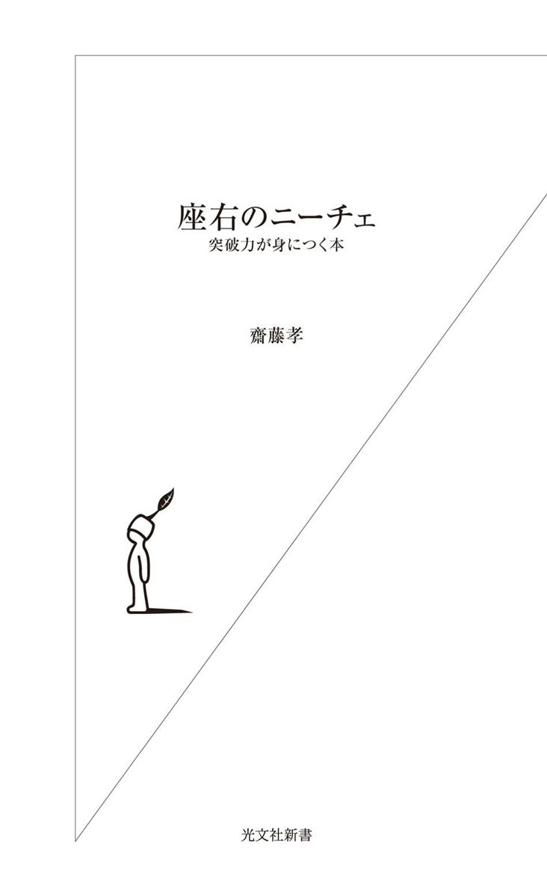
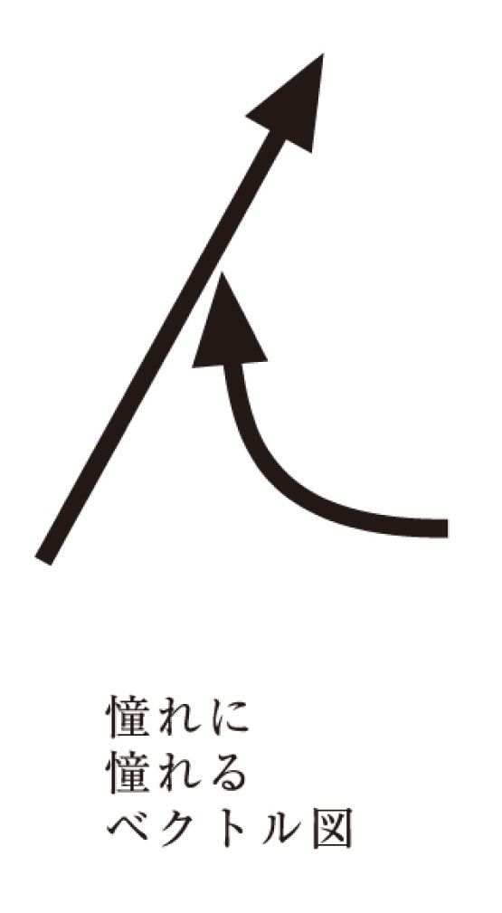

| 座右のニーチェ～突破力が身につく本～ | |
| 齋藤 孝 | |
| (2008) | |

目 次
ニーチェは私の生涯の友である。それも半端なつき合いではない。何かにつけニーチェを繙く。なかでも『ツァラトゥストラ』は、常に座右に置き、日々ぱらりとめくってから仕事に入る。今も学生たちと回読したり、そらんじたりしている。
ニーチェの思想は、「昔、読んだことがあるな、あれはよかった」と満足する類のものとは違う。たとえば、「昔は風呂というものに入ってよくすっきりしていた、でも今はめったに入らない」という人がいたら、「不衛生だな」と思って敬遠するだろう。ほとんど誰もが習慣的に風呂に入るのと同じように、習い性のように触れているべきものだ。
読んだほうがいい、とはあえていわない。むしろ読まなければならない。恐れや小心、油断など、大人になるにつれ心にこびりついてくる精神の垢を、きれいに洗い落としてくれるのがニーチェだ。
＊
思うに、ニーチェほど毎日に効く思想を唱えた人はいない。
諸学問の知と哲学を統合しようとしたヘーゲルの壮大な理論体系や、人間理性の全構造を解こうと緻密に積み上げていくカントの哲学では、長大すぎて瞬発力を誘発するような刺激がない。
キリスト教や仏教の示す真理は読めば理解はできるし、おもしろいとは感じるだろうが、実際問題、毎朝ブッダのことばを読み上げてから、「さあ、きょうも張り切っていこう」と気持ちを奮い立たせることはむずかしい。
彼らのことばは内省的で、この世の価値とは違うところに意義を置いているからだ。多忙な生活を送っていればいるほど、彼らの思想にどっぷり浸かっているヒマはないだろう。
対して、ニーチェはアフォリズム（箴言）を得意とする思想家である。本質を凝縮した寸鉄のことばが、読み手のこころにいつまでも突き刺さる。自分の中の凝り固まった枠組みを突き崩して、新しい考え方へと導いてくれる力を持ったことばが並んでいる。
私も現代社会で生きる者として、研究やビジネスなどさまざまな仕事をしてきたが、私にとってニーチェは、仕事の活力を生むドリンク剤、毎日めくらずにはいられない日めくりカレンダーのごとき存在なのだ。
ただし、読むだけでは意味がないのがニーチェだ。ニーチェのことばを、いくつ血肉にしているか。それが「ニーチェ活用法」というニュアンスに含まれている。
ニーチェを知りたいと思ったとき、理論を完璧に理解しなくてもいい。全体像がつかめなくても構わない。むしろ、一つのアフォリズムを座右の銘にし、大事にしていくことだ。「これは効く」と思ったことばを、そらんじるほどになれればなおいい。
＊
ニーチェは、既成概念や慣習など、人々が当たり前として受け止め、思考停止してしまっているものを常に疑ってきた。「他のやり方／考え方もあるのではないか」と模索しつづけてきた。いわば反逆の思想の提言者だ。
現代人もまた、絶えずイノベーション（革新）を求められている。〝変わらなさ〟が安定と呼ばれて歓迎されていた時代はすでに遠い。世の中が、昼夜分かたず〝刷新〟〝変革〟〝バージョンアップ〟など、現在を乗り越えていくかたちを要求していて、今の状況に甘んじることを許さない。つまり、今不可欠なのは新鮮さで、いちばん不要なありようは惰性化だろう。滞ることなく新しいものを生み出す、クリエイティブな才知が必要なのだ。
ニーチェは反逆者であったが、既成のものをただ腐すのではなく、それに代わる新しい価値を発見して提示することを忘れなかった。
ビジネス書の世界には、「すぐに○○できる」「こうなるためのメソッド○か条」という謳い文句があふれている。しかし、そうした書物が何十万冊も束になろうと、ニーチェのアフォリズム一句の重みにかなわない。ニーチェに触れれば触れるほど、そう感じるに違いない。
＊
本書では、ニーチェという強烈な風に毎日身をさらしてきた私の経験に基づき、偏愛的にニーチェを紹介する。ことばは代表作『ツァラトゥストラ』（手塚富雄訳・中公文庫）を中心に拾った。生命は燃える火なのだというニーチェの力強いメッセージを、感じ取っていただけたら幸いだ。
本文中に使用したニーチェのことばは、特に断りのないかぎり、手塚富雄訳『ツァラトゥストラ』（中公文庫）を原本としたものです。
憧れつづける才能
何と力に満ちたことばだろう！ 私は、色紙や本にサインを頼まれると、名前の横によく「憧れの矢となれ」というメッセージを添える。これは、ニーチェの先のことばから取っている。「超人を目ざして飛ぶ一本の矢」という表現は、私の教育学の基本であり、精神の背骨である。
ニーチェのいう「超人」は、スーパーマンのような万能の力ではない。天賦の素質に恵まれた人間ということでもない。これは私の解釈だが、常に今の自分を超えようと決意し、未来へ向かって飛びつづける人を指している。あるいは、憧れに憧れてやまない人、加速度をもってグングンと上昇している人をいう。
うまくいっている会社の経営者やプロジェクトのリーダーは、間違いなくクリアなヴィジョンをもって事に当たる。ヴィジョンは、いわゆる「理想」「夢」とはまったく違うものだ。
たとえば、本を作るにしても、私は茫漠としたプランは立てない。「働かない若い世代が、やる気を掻き立てられるような内容で書こうと思う」ではダメだ。
「自分の基本スタンスである上機嫌に働くコツを教える内容でまとめよう。仮だがタイトルは口癖にしている『ミッション、パッション、ハイテンション』にしよう」と完成型が頭の中に具体的に見えている企画だからこそ、編集者を説得できると思っている。実際にこの企画は『働く気持ちに火をつける』（文春文庫）という一冊になっている。確固たるヴィジョンがなければ、ともに働く人たちの意欲を喚起することはできないのだ。
強烈な、一つのベクトル
当座の目標を達成してしまうと、その地位に安住して成長を止めてしまう人は多い。あるいは、大きな夢を持っていながら、小さなつまずきで簡単にあきらめてしまう人もいる。いくら優れた能力を持っていても、向上心を持って突き進むことをやめてしまった瞬間に、もうそれは超人ではない。ただの人間だ。
そんな中途半端さを嫌うニーチェが矢にたとえて訴えつづけていたのは、「自分のパワーを出し切る」ことである。
一本の矢のイメージは、方向と量を持つ、「ベクトル」に近い。
方向性は、空に輝く星を一直線に目指していくようなイメージである。そして量は、「憧れ」の熱意の強さ、ということができる。自分の今いる位置に安住せず、常に新しいものを創造していくのだという意志、そのかたまりがニーチェである。
ニーチェはパワーがありすぎて周囲が戸惑うほど、すっ飛んでいた。いわば、自分自身が「超人を目指して飛ぶ一本のでっかいベクトル」であった。激しく批判されても、自説を曲げることはなかった。
学びつづけ、闘いつづけた彼の遺した業績は、キリスト教やそれまでの哲学を一新するような思想の凝縮であった。あまり幸せとはいいがたいニーチェの生涯ではあるが、その生き方は何ともすばらしい。
私にとってニーチェとは、憧れの矢だ。憧れを目指して飛ぶ矢は、憧れを引き寄せる。「憧れに憧れる」ことが、私の思想の根幹であり、それはニーチェの思想と常に共鳴している。

憧れは、自己と別物ではない。ニーチェは、自著『反時代的考察』の中で、「いかにして自己を知るか」という問いに対して、自分のリスペクトしてきた諸対象を自分の前に並べてみろ、といっている。いわばこの憧れの対象リストが、本来の自己がどのようなものであるかを示している。「憧れの矢」はすでに自分自身の本質でもあるのだ。
自分を褒める
先に引いた一行目のことばは、ニーチェが自著『この人を見よ』（岩波文庫）の中で、『ツァラトゥストラ』についていいはなった一言である。何という自信。自分の本について、このように大絶賛するという神経が私は大好きだ。
ニーチェは古典文献学者として出発している。そのため、ラテン語や古代ギリシャ哲学を徹底的に学び、身につけた。地道に勉強を積み重ねてきた自信があったからこそ、このような自画自賛ができたという部分もあるだろう。
それ以上に私は、彼は非常に客観的な批評力の持ち主だったからこそ、「自分の著作であっても、いいものはいい」といい切れたのではないかと思っている。
日本人は、自らの能力や作品を認める発言をすると、すぐに自慢やうぬぼれだと受け取るところがある。「拙著」といういい方は、その傾向から生まれた代表的なことばだ。
だが、内容に自信があろうがなかろうが、自分の書いたものだから「拙い」と下手に出ておこうとするのは、私には自己保身のいいわけに聞こえる。他者から攻撃されたくないから、先んじて自分を貶めておこうというのは、公平な客観的評価に身をさらしていない気がするのである。
はっきり良し悪しを主張する姿勢
ニーチェは何も最初から、傍若無人に自画自賛ができる人間ではなかった。
ギムナジウムの学生だった頃からその飛び抜けた頭脳が認められ、二十四歳という異例の若さで大学教授となっている。しかし、一八七二年に発表した第一作『悲劇の誕生』は学者たちからまったく認められず、この頃から大学内では孤立を深めていった。
その後、心酔していたワーグナーとの決裂、ルー・ザロメへの失恋、家族との不和、深刻化する病状など苦悩の日々を振り払うように、一八八三年、ニーチェはイタリアのラパロでまず『ツァラトゥストラ』の第一部を書き上げる。第四部が上梓されたのは一八八五年で、これはわずか四十部の自費出版だった。
結果的には、『ツァラトゥストラ』によってますます読者を失ってしまうのが切ないが、彼はこの書で、まったくオリジナルな思想を打ち出し、新しい価値を創造しようと決めた。その価値を絶対的に自分自身で信じ切ったからこそ、すばらしい作品を生み出すことができた。自画自賛は、決して根拠のない、中途半端な決意でなされたものではない。
〈まず大胆に自分自身を信ずるがよい――おまえたち自身とおまえたちの内臓を信ずるがよい。自分自身を信じない者のことばは、つねに嘘になる〉（一九六ページ）
とツァラトゥストラはいっている。
仕事、企画、作品などは、それが自分のだから、他人のだからという理由で肯定／否定されるべきものではない。純粋にその出来の良し悪しで見たときに、「誰がそれをいったのか」を度外視して、いいか悪いかのジャッジを下せる〝客観性〟が重要だ。また、それができる人はすがすがしい。
突き破る力
『この人を見よ』の目次は「なぜわたしはこんなに賢明なのか」「なぜわたしはこんなに利発なのか」「なぜわたしはこんなによい本を書くのか」となっている。一瞬絶句するが、これだけの自画自賛力は刺激的だ。
本当に優れたものを優れているといい切る精神、あるいは愚かしいものを見切る精神、それが今の日本社会には足りない。
手心を加えずにものをいうと、日本社会では損をしたり、嫌われることがある。はっきりものをいえばいうほど疎んじられるので、多くの人はいわずじまいで済まそうとする。いうとしても、遠慮がちになってしまう。そうやって相手への気づかいだけがふくれ上がると、人間関係の風通しが悪くなる。日本人の美徳たる控えめさが、結局は、相互の鬱憤を温存するつまらない結果を生んでしまうのだ。
もっとも、若い才能が頭角を現し、斟酌せずにものをいうようになると、周囲がこぞって引きずり下ろそうとするこの醜い風潮を、日本特有のものだと思っていたら大間違いだ。欧米社会だって同じである。
昔から人間は、表面的にはいい顔をして陰では足を引っ張り合うという卑屈な関係を、必要悪として容認してきたところがある。実はそれこそが、ニーチェが批判した「隣人愛」の真の姿だ。遠慮し合ったり、本音をいわず陰で人を貶めたりする行為は、新しいものを生み出そうというパワーを極端に弱める。うぬぼれではない自画自賛は、その歯止めになる。
必要以上に謙遜するにしても、他人をうらやむにしても、根底にあるのは、自分可愛さ、つまり保身である。裏返せば、自分の能力への不安があるから、誰もが怖がって、本当のことをいわない。
しかし、「自分」をゆがめた像で見ている限り、人は未来を切り開くことなどできないのである。一度「自分を度外視」してみるといい。周りがクリアに見えてくる。
ちまちまするな、というメッセージ
イエス＝キリストが本来訴えかけている隣人愛は、周りの人たちに対して平等に愛情を持つことなのかもしれないが、ニーチェにいわせれば、イエスが望んだような形にはなっていない。むしろ、誰もが、自分にも他者にも足並みを揃えるための隣人愛を強要し、上に伸びていく強い力を、結託して押さえ込んでいるふしがある。
ニーチェが隣人を否定するのは、隣人が、嫉妬する存在だからである。
嫉妬心から人の邪魔をしたがる人間は、世の中にたくさんいる。大局的に見たら応援しなくてはならない場面でも、仲間内の狭い価値観や評判を基準にして、こまかいところのミスをつき、その人のやる気を削ぐ。そうすることで、門前払いを喰らわせるような仕打ちは、企業でも学者の世界でもよくある。
私には、「君たちは隣人同士、仲間同士でちまちましていて、よく満足できるものだね」というニーチェの声が聞こえるようだ。彼はそんな狭苦しい人間関係から一歩出てみろ、とけしかけている。
狭い人間関係はいらない
ニーチェは、他の人を恨みそねむようなつまらぬ根性を持つな、嫉妬というせこい精神から、祝福を贈れる豊かな精神へと脱皮していけ、それが人間が超人になることだ、といいつづけた。
〝隣の人より、遠くの人を愛しなさい〟とはおもしろい表現だ。家族や友人などの間には、長いつき合いになると、無言のうちに「こうしなければならない」という圧力が生まれやすい。新しいことをしようとしたり、新しい関係を築こうとする人を、無理やりに昔の関係性のまま縛りつけようとするのだ。人間関係は、狭くなるほど息苦しくなる。
ほどよい距離をもってつき合うことは、人間関係の極意である。
ニーチェのアフォリズム集『人間的、あまりに人間的』というタイトルが本当に意味するところは、ぬるま湯のようなヒューマニズムの対極にある。あまりにも人間的なレベルに留まっている、せこい生物たちへの苦言なのである。
嫉妬はクセになる
嫉妬は、ニーチェがもっとも忌み嫌うものの一つだ。日本社会をダメにしている要因でもある。嫉妬心との闘いは、非常に厄介だ。
私はかつて、ベンツや豪邸など不愉快さを刺激するものを所有している人は、慰謝料、すなわち嫉妬税とでもいうべきお金を払うべきだと考えていた。大学院にいて悶々と学問だけをしていた二十代の頃の私にとって、その感情はあまりに切実だった。ベンツや豪邸は見るだけで嫉妬心を掻き立てられるアイテムだったのだ。
誰の記憶にも残っていると思うが、中島敦の『山月記』で虎になってしまった男の告白は赤裸々ですさまじい。私も、若い頃は自らの嫉妬心や虚栄心を暴かれているようで、読みながらどうにもいたたまれなかった。
博学才穎だった李徴は、役人程度の身分に飽きたらず、名を成そうと詩人を志す。だが役人を辞めて取り組んだためにたちまち生活が貧窮した。一向に芽が出ない自分の才能に歯がゆくなった李徴は、やむなく地方官吏に復職する。
ところが、かつては李徴が歯牙にもかけなかった連中は、いまや彼よりずっと上の役職にいる。自分のほうが能力があるのにという自負が強ければ強いほど、能力とは別にいい役職に就いている男たちが妬ましい。李徴はそれに耐えきれず発狂して、行方知れずとなってしまった。
一年後、旧友の袁傪は李徴と山の中で邂逅する。そこで袁傪は、卑小なる自尊心、裏を返せば嫉妬のために虎に身を落とした悲劇の男の身の上を聞くのである。
自分より成功していたり認められている誰かを見ると何となく不快になるのは、まずもって嫉妬心のためである。嫉妬にふりまわされると、本当にいいものをゆがめて評価したり、前向きな心をしぼませてしまったり、おのれを疲弊させてしまう。自分にとっていいことはない。私たちが超人でいるためには、嫉妬の芽をどうやって摘み取るかが一つの課題である。
ニーチェは『この人を見よ』で、自分は、ルサンチマン（怨恨感情）を自分にとって価値のないものとして自分自身に禁じ、清算した、といっている。そして、ブッダを、魂を怨恨感情から解放する、魂の衛生学者として高く評価している。仏教とは、ルサンチマンからの解脱だったのだ。
エネルギーをどこから作るか
大きな仕事をする人の中には、巨大なコンプレックスや何らかの恨みつらみを持っていて、それをバネにしている人がいる。しかし、劣等感はいわば核燃料のようなものだ。エネルギー値はでかいが、取り扱いもむずかしい。
自分のエネルギー源を社会に対する恨みや復讐から吸い上げてくる人は、絶えず自分と目の前の相手ではどちらの不幸レベルが上かという勝負をしている。そういう人は、不平不満の種がないと力が出ないタイプだ。
現実の社会を見てみると、そのようなある種の心理操作、たとえば「人に馬鹿にされたから見返してやろう」という復讐心や、「人の上に立って人を支配したい」という権力欲など、ネガティブなエネルギーから生きるパワーをたぎらせていくケースは案外多いように思う。
ヘルマン・ヘッセの『デミアン』（新潮文庫）の中でピストーリウスは、〈われわれがだれかを憎むとすれば、そういう人間の形の中で、われわれ自身の中に宿っているものを憎んでいるのだ。われわれ自身の中にないものは、われわれを興奮させはしない〉（一六六ページ）といっている。
実は憎しみは、自分の中にそれと似た影を見つけるから生ずるものだ。
他人を否定するパワーで自分を刷新していくのは、いい。しかし、他人や世間に自分の努力不足を責任転嫁して出発するのは問題だ。他を否定する力が、やる方向に生かされるのではなく、やらないいいわけに使われるのでは、それは結果として自分を否定することになっていく。
エネルギーの源泉は、他人ではなく自分の中に持ちたい。「今の自分が嫌いだから、まったく別の人間になりたい」といった、自分への軽蔑や反発から始めるのは、ニーチェ的ではない。卑小な自分が嫌いだとして、目を背けてがむしゃらに突き進んでも、理想の自分に手が届くとは限らない。
自分を愛する
自分という存在を肯定していれば、自然とその大切な自分のために向上心を持とうというエネルギーは湧いてくる。突き詰めていえばそれは、自分自身を愛し、尊いものとして見ているかどうかだ。
〈おのれを愛することを学び覚えよという命令は、きょうあすに達成できるようなことではない。むしろそれは、あらゆる技術のうちで、もっとも微妙な、もっともこつと忍耐を必要とする、最終的な技術である〉（三〇八ページ）とニーチェも認めるほど、自分を愛することはむずかしい。
根源的な生命力を維持しつづける重要性を、ニーチェは常に説いてきた。私も、エネルギーの源をどこに持つかが大事だと思っている。何をするかというヴィジョンと、気高い精神があるかないかが大きな違いを生む。
二十代までは、恨みや妬みが動機でもいいと思う。だが、四十、五十になっても、いつまでもそれを抱えている人間を見ると、薄ら寒い気分になる。蓋をしたままの生ゴミが腐っていくような、汚い精神の老いを目の当たりにするからだ。三十代になったら、つまらない怨恨は一度きれいさっぱり帳消しにしておくことを、私は勧めたい。
とりあえず、拍手
お金に限らず、名誉や権力などにも人は嫉妬する。不平不満をつのらせ、自分が他人に認められていないと怒り、適切な評価ができなくなる。
もちろん、嫉妬をうまく飼いならしてポジティブに働かせよという意見もあるだろう。しかしほとんどの場合、嫉妬心はネガティブに作用しやすい。嫉妬がやる気につながるケースよりは、嫉妬がいらつきを増長するほうがずっと一般的だ。それを抜け出るための技法が、「拍手」だと私は思う。
拍手の効用は三つある。
一つは、場が盛り上がることだ。単純だが、空気がにぎやかになる。二つめは、褒められた側の気分がいいことだ。褒められた本人は自信が持てるし、褒めてくれた人に対して自然と好感を持つ。そして三つめ。これが最大の効用なのだが、拍手をすると自分自身、嫉妬の泥沼から抜け出すことができるのである。
たとえば、他の人のアイデアが自分のよりおもしろかったとする。そういうときに人は素直に褒めず、「アイデアはいいが、現実的にはむずかしいよね」「思いつきをいうだけなら簡単だけどね」など、軽く腐してしまうような発言をしがちだ。胸に手を当てて考えてみるといい。本音ではいいと思った心の傾きを、嫉妬が掻き消して、つい相手に嫌味をいってしまったり、けなしてしまったりする。あるいは、基本的には賛成しているのに、わざと同意しなかった。そんな経験はないだろうか。
ところが、先に拍手をしてみると、ことばがそれに引きずられる。「なかなかいいね」「ああ、それはいえてる」など、まず肯定から入ることになる。それは、その人が一つ〝人間的なるもの〟を脱皮した証である。超人へ近づいたのと同じなのだ。
健全な人間であれば、普通、誰かをわざと腐してしまったら、自己嫌悪を覚える。それを避けるには、拍手がいちばんだ。
私は数々の会議を指導し拍手を勧め、『会議革命』（ＰＨＰ文庫）という著書でも拍手の重要性を指摘してきた。日本人は会議の場で拍手をする習慣がほとんどない。自然には拍手ができない。だからこそ意識的に身体の習慣とする必要がある。
拍手とは自らを救済する祝祭の技なのだ。そんな簡単な方法で自らを嫉妬の沼から救い出すことができるのだから、会議の場などで試してみてほしい。特に自分より若い人がいった意見に対して、拍手して褒めることができたらすばらしい。もし『山月記』の李徴が拍手の技法を知っていれば、虎にはならずに済んだに違いない。
嫉妬を祝祭に変える技、拍手とハイタッチ
スポーツは、力の差がかなり明快な世界だ。たとえばサッカーやテニスやゴルフ。世界ランキングや獲得賞金、年俸などが高ければ高いほど、一般的には力が上と考えて間違いない。もっとも、プロ同士でも、いやプロとアマほど実力格差が明確でも、その競技に関心がある以上は、多少の嫉妬心とは無縁ではない。
とはいえ、さすがにイチロー選手に対しては、とても嫉妬する気にならないだろう。毎年二百本安打を打つ実力派。彼のプレースタイルや記録の数々が、並の才能ではとても追いつけないことを証明しているからだ。
優れたものを前にして敗北感を覚えることが愉快なわけではないが、スポーツの場合は不思議なくらい、自分自身なり贔屓のチームなりが気持ちのいい勝負ができていたなら、負けても爽やかでいられる。
サッカーではユニフォームを交換したり、テニスでは試合後に握手をしたりする。ああいう称え合いはまさに祝祭的だと思う。ライバルは単なる敵ではない。戦いが終わった後では祝福し合える関係になれるのだ。
しかし、その上を行くのは、ベンチに坐っているだけで嫉妬心を抑えてチームのために一生懸命になれる選手、ライバルのナイスプレーを見たとき「いやあ、キミの今の動きはすばらしかった」と、拍手で嫉妬心をいなすことができる選手である。これは相当カッコいい。
ほかにもう一つ、祝祭の技がある。ハイタッチだ。
ハイタッチはポイントを決めた側が行う。バレーボールでもサッカーでも、あるいは卓球のダブルスやプロレスのタッグなどで、いい技を繰り出したときに、喜びを分かち合いたくてパンパンパンと手を叩き合う。そういう意味で、自分自身の過剰なエネルギーを周りに与え、同時に、相手から感謝を受け取るのがハイタッチだ。それはお互いにこの場を共有できてよかったというメッセージになる。
そのときに大事なのは、呼吸を入れ替えることだ。
拍手やハイタッチをしながら、「わかる、わかる」「キミの意見はもっともだ」などとことばを吐き出すと、自然と呼吸ができる。笑うのも、気分が新たになる。空気が入れ替わるほうがいいな、笑いが起きるほうが楽しいなど、場の祝祭感というものを身体が覚えると、自分ひとりが評価されなくても別にいいんだと、気持ちがわだかまらなくなるのである。
そう考えると、スポーツの真の目的は競争心を植えつけることではない。相手やチームメイトと一生懸命切磋琢磨し合う熱と、終わったときの爽快感。その二つを循環させて味わう健全な精神の回路を作る訓練ではないかと思うのだ。
実は、多くの近代スポーツは十九世紀末以降に発達した。ニーチェは一九〇〇年に死んでいるので、現在のようなルールが整備されたスポーツらしいスポーツは彼の存命中はなかった。にもかかわらず、ニーチェの思想には、スポーツの持つ身体的な共感とも通じるところがあり、おもしろい。
敵としての友
友人のイメージは人それぞれだろうが、いつも一緒にいて、なぐさめ合ったり、愚痴を聞いてやることでお互いをいたわる関係をイメージしている人が多いだろう。しかし、同情をするのが友なのではない。心を鬼にして、友のために厳しく接し、お互いに甘えることのない敵同士の関係性の中に、ホンモノの友情は存在するとニーチェはいう。
『あしたのジョー』（高森朝雄作・ちばてつや画）の、ジョーと力石徹の関係を例に取る。彼らはお互いに優しいことばを掛け合うことはなかった。リングの上で、ライバルとしてひたすら闘いつづけるわけだが、彼らの中には、対等に超人を目指す同胞として、何物にも代え難い友情が生まれていた。ジョーにとって、もし力石がともに上を目指していく存在になり得なかったとしたら、ジョーの成長は途中で止まってしまっていたに違いない。ジョーの側もヘンに力石に気づかって、「減量しすぎて参っているみたいだから、今回はちょっと手を抜いてやろう」と考えてしまったら、向上はなくなる。
太宰治の『走れメロス』でも、「セリヌンティウス私を殴れ」といわれたとき、セリヌンティウスは本気でメロスを殴る。弱々しく殴ることが、友のためになるとは限らない。
ニーチェは繰り返し同情の醜さについて書いた。
〈友への同情を堅い殻の下にかくすがよい。それを噛めば、一枚の歯が折れるくらいに堅くなければならない。そうであってこそ、君の同情は、こまやかな甘美な味をかもしだすだろう。〉（八九ページ）
つながりたい症候群
現代は、友情よりも「つながり」が求められている時代かもしれない。インターネット依存症や携帯電話依存症などということばが生まれるほど、何かとつながっていなければ不安になるらしい。メールやブログでのコミュニケーションがまさに「つながり」を求めてやまない場になっている。
「今日はこれを食べたよ」とブログに食事の写真をアップすれば、「おいしそうだね」「私も食べに行きたい」と他人からコンタクトしてくる。ささやかな共感を得ることで、自分のことがわかってもらえたという満足を感じるのだろう。架空の空間で、同調や共感で支え合う、何となくの共同体が作られていく。孤独にならないように、誰もが「返事ちょうだい」「コメント下さい」と接触を欲しがっている。
しかしそこには、メールやブログ、携帯同士でつながっている事実はあるものの、それが本当のつながりかというと、誰もが首を傾げるだろう。敵どころか、友にもなれないぬるま湯の関係にすがるというリレーションシップはあまりに弱々しい。
このような時代だからこそ、ニーチェのことばは大きく響く。
〈友をもとうとするならば、......人の敵となることができなくてはならぬ。人は、おのれの友をも敵として敬うことができなくてはならぬ。〉（八七ページ）
友となる条件
ニーチェにとって真の友とは、自分とともに高みに上ろうとする人間のことだ。お互いに認め合い、高みを目指そうとする者だけが、本当の友を持つ資格がある。
つまり、友人とは、自分が超人を目指して飛ぶ一本の矢になったときに、はじめて成立する概念だ。自分自身を解放していない奴隷のような人間は、友を持つことはできない。翻っていえば、これは「自分の向上心を高めてくれない人間とはつき合う必要はない」という決心である。
先日、私はブッダのことばをまとめた本をいくつか読んだ。中村元が訳した『ブッダのことば』（岩波文庫）の中に、
〈われらは実に朋友を得る幸を讃め称える。自分よりも勝れあるいは等しい朋友には、親しみ近づくべきである。このような朋友を得ることができなければ、罪過のない生活を楽しんで、犀の角のようにただ独り歩め。〉（一九ページ）
というものがある。同じ道を、優れた人や自分と同等の人とは一緒に行ったほうがいいけれど、そうでないのなら独立独歩で進めというわけだ。ブッダは心優しい賢人というイメージがあったので、こんな厳しい発言をしていたことに驚いた。これはまるでニーチェではないか。
私の中では、人類の中で最も攻撃的な反逆人がニーチェ、最も穏やかな寛容の人がブッダと位置づけられている。その両端がまったく同じような発言をしているのが興味深い。
「犀の角のようにただ独り歩め」とは、一本しかない犀の角と同様、独立した人間になることだ。自分自身で判断し、行動には自分で責任を持つ。
「一緒に何かをやりましょう」ということになったとき、責任や判断を、相手に任せてしまうことはよくない。パートナーは目標を共有する相手かもしれないが、その相手が自分のぶんまで責任や仕事を引き受けてくれると考えるのは甘い。
ニーチェにとって、友情とは、優れた独立独歩の人間同士しか持ちえないものだった。甘えやいたわりなどとは無縁の火花の散るような交流が、ニーチェの理想だった。
友だちが少なかったニーチェ
ニーチェ自身、友人が極端に少なかった。人づき合いが不得手だったこともあるようだが、本当に認め合える友人を見つけることができなかったともいえるだろう。
ニーチェの生涯で重要な意味を持つ友人といえば、ギリシャ宗教史家で、のちにドイツ古典文献学の大家となるエルヴィン・ローデである。ニーチェとローデは、多くの点で意見の一致を見ることはなかったが、会話がこころの深いところへ向かっていくと、たちまち意気投合するようなところがあったという。
ふたりの出会いからほどない一八六七年頃からしばらくは、無二の親友といってよかっただろう。学者の間では不評だったニーチェの『悲劇の誕生』を擁護してくれたのもローデである。
ニーチェは兵役中において、ローデ宛の手紙にこう記している。
〈友の生活の真剣さは、僕自身の心のあり方と実際同じ程度を示しているのであり、ものごとや人間に対する友の価値評価は、だいたい僕の価値評価と同じ法則に従っており、つまるところ友の人柄全体が僕を力づけ、僕を鍛えてくれる働きをもっているのです。〉（『ニーチェ 第二部』九八ページ）
ニーチェはローデに対し、自分と同じような高みを目指す数少ない人間だと期待していたわけだが、ローデ自身は、自分がニーチェほどの創造性を持っていないことに気づき、徐々に気後れしていく。ニーチェの中にある友情への強すぎる憧憬が、結局はあらゆる友情を破壊していくことになってしまうのが切ない。
とはいえ、一八六九年にバーゼル大学に招聘された頃のニーチェは、友情や好意に囲まれ、ローデとの交流も絶好調、振り返ってみれば彼の孤独な人生の中でもっとも幸福な時期だったともいえるだろう。そんなときにもニーチェは、家庭の幸福の心地よさは理解しても、そんなものはありふれすぎていると考えていたようだ。
当時のローデ宛の手紙にも、何にもまして友情を欲していたニーチェの心情が見て取れる。
〈しかし友情は違う！ 友情なんて存在しないと疑う人もいるにはいる。実際、友情とは、自分の人生行路が荒野を行く道だと思っている疲れ切った漂泊者、あのごく少数の人にはじめて与えられる、選りすぐりの御馳走なのだ。〉（前出一三八ページ）
人生の重大なポイントに、切磋琢磨できる友人がいる。そのすばらしさ、大切さを誰よりも知っているのがニーチェだ。後世の私たちが感じるのは、誰よりも高貴な友を求めたがために友情を全うできなかった彼の無念さである。「友人」について多くのことばを遺している背景には、ニーチェの「友だちがいない」究極の寂しさがある。
とすれば、そのつらさを引き取り、現代の私たちが真の友を求めて行くことだけが、彼の孤独な魂のなぐさめになるだろう。
楽しまないことは罪である
私たちは生まれ落ちただけでもう罪を負っているとはキリスト教の教えだ。アダムとイブが禁断の木の実を食べた罪をすべての人間が背負うという考え方には、私は共感できない。日本人にはそうした西洋的感性は理解しにくいともいえるが、ニーチェは理解／非理解のもっと先にいる。現世の悦楽に溺れることが原罪なのではなく、楽しまないことが原罪だというのである。原罪の概念を根底から覆している。
現代社会に生きる人間は、前時代の人たちより比較的自由で享楽的だと思われがちだが、本当に私たちは心から楽しんでいるのかどうか、はなはだ疑問である。というのも、教育の現場に関わる身として、いじめが複雑化していることを重く捉えているからだ。
いじめは今に始まったことではないが、より狡猾に、より陰湿になっている。〈そしてわれわれがよりよく楽しむことを学びおぼえるなら、われわれは他人に苦痛を与えようとする気持などは、きれいに自分のなかから払い落としてしまうだろう。また他人の苦痛になることを考え出すようなこともなくなるだろう〉（一三六ページ）とニーチェがいうように、いじめを起こすのは楽しんでいない人だ。
排除されたくないという意識が邪魔をする
雨宮処凛の『ともだち刑』（講談社文庫）は、凄惨ないじめ小説だ。著者自身が中学時代に受けたいじめ体験をベースに書いたという。
語り手でもある「私」こと浜田はバレー部に所属し、そこには同じ中学二年のかずと紺野という仲良しがいた。あるときひとりの転校生・今井が、同い年の新入部員としてやってくる。「私」は活発で大人びた今井に憧れ、「あなた」と慕うが、当の今井からは「私」はいじめの標的にされるのだ。今井は「私」のあだ名を失敗の代名詞にし、何か失敗すると「浜っちになっちゃったよ」といってごまかす。バレーがうまくない「私」をいつも今井は怒鳴り、「私」はどんどん萎縮していく。そのため、バレー部の部員もこぞって「私」を軽んじるようになる。
今井は「私」をいじめるだけでは飽きたらず、陰でかずをブス呼ばわりし、ある事件を口実に紺野を除け者にする。
グループは四人から三人になった。休み明けのテストを前に、「いやになっちゃう」とグチり合う下校時。今井が「数学なんて何もやっていない」というと、「私」は調子に乗って「本当に嫌になっちゃうよね、白紙で出したいぐらいだ」と答える。今井から「出せもしないくせに」「勇気ないくせに」と責められるうち、「約束よ。ふたりで白紙で出そう」と誓い合うのだが、実際白紙で出した「私」が「ねえねえ、私ホントに白紙で出したよ」と報告すると、今井は「馬鹿じゃない？ 何マジにしてんの」としらっと答えるのである。むちゃくちゃないじめなのだ。
心の片隅では、グループから離れればいいと思ってもいるのに、部活をやめるともっとひどい目に遭う気がして、「私」はされるがままにやり過ごす。しかし、「私」がやっとの思いで保っている精神のバランスを、バレー部の顧問の教師はさらに追いつめて粉々にしてしまう。
排除されたくない、一人になるのが怖いという気持ち、そしてひどい目に遭ってもなお「あなた」に執着する気持ちから、「私」は練習の帰り道、「私」を振り払うように部室を出て行く今井とかずを追いかけて一緒に帰る。分かれ道に来た三人はバイバイと手を振るのだが、「私」だけが実は無視されている。だが、「端から見れば、仲のいい三人組に見えるかもしれない」と祈るような思いで「私」が手を振りつづけるシーンは胸が痛い。
逃れようにも逃れられず、必死に脱出口を求める最悪の状況が切々と描かれている本書は、文学として非常に出来がいい。私の中では勝手に芥川賞をあげたい気持ちになっている。
さて、ここに出てくる集団、バレー部や中二の仲良しグループは、結局、寄り集まってはいても、集団全体で楽しむということができていない。よりよく毎日を楽しむ姿勢をひとりひとりが意識し、向上心を持てば、人を貶めようなどと考えもしないものなのだ。ところが、そうしたポジティブな明るさがないと、他の人をいじめ、飽きたらいじめの対象を替えていくことによって、いじめの新鮮さを保つということが平気でできてしまう。
原罪やルサンチマンを背負った弱者になるな、とニーチェは説く。これは、いじめ防止への提言でもある。
手加減が限界をつくる
スポーツの試合を見ていると、選手が突如崩れていく瞬間を目の当たりにすることがある。
さまざまな要因があるが、手加減や手抜きから自滅していくパターンは少なくない。同情の思いに駆られたり、自分が実力では上だからと手心を加えたりすることで途端に調子が崩れて、取り戻せなくなるのだ。
平等への信仰は根強い。
かつて子どもたちの運動会で、ゴールの少し手前で手を結び、横一線でゴールするという平等主義の徒競走が論議を呼んだことがある。今はなくなったが、今度は、だいたい能力の同じ者同士で走ることで平等性を出すやり方が出てきている。
五人ずつのレースなら、あらかじめタイムを計っておいて、記録的に速い順もしくは遅い順に五人ずつ組をつくらせる。これでどんなことが起きるかといえば、いちばん速い五人が走ったとき、徒競走に参加した児童の中で五番目に速い児童は、その組でビリになってしまう。クラスで遅いほうから五番目の児童は一位になれるが、五番目に速い児童はビリという矛盾がまかり通ることになる。
足を引っ張り合う毒ぐも
ニーチェの生きた十九世紀は、自由、平等、友愛といった提言が定着していった時代だった。それ自体は悪いことではないが、〝平等〟を突き詰めすぎると、評価すべきものさえ評価しなくなる。
ニーチェはエセ平等を説く者を毒ぐもと呼んだ。高い価値を持つ者を嫉妬によって引きずり下ろそうとすることを忌み嫌った。毒ぐもたちは、徳の仮面をつけたことばを正義といい、〈われわれと同等でない、より強力なすべての者に、復讐と誹謗を加えよう〉（一五五ページ）と誓い合う。そのことにニーチェはひどく憤っている。
たとえば、英語圏からの帰国子女なら、ネイティブ並みに英語が発音できるケースがある。ところが、周囲と違うそのことがいじめのきっかけになったりするのがめずらしくない。
もし帰国子女自身がクラスで浮くことを恐れて、いい加減に発音したりすれば、やがて本人の発音力も落ちるだろう。周囲にとっても発音のよい手本がなくなることになる。平等感が生まれるのは一瞬だけで、むしろクラス全体が停滞していくのである。
もし他のクラスメイトたちが素直に帰国子女の発音のよさを認め、学ぼうとすれば、全体のレベルが上がっていくはずだ。優れた者を引きずり下ろしたり、無理に「平等」を作り出さないほうが、人間は進歩するのである。
失われた向上心
現代では、平等と正反対のところにある向上心が非常に失われつつあると私は危惧している。向上心は、西洋思想を模範とした明治時代以降、ずっと日本人の憧れであり、青年たちの基本精神だった。
夏目漱石の『こころ』の「先生」がＫを自殺に追い込んだときも、向上心ということばが深く関わっていた。
小石川に住む軍人遺族の家に下宿した先生は、その家の未亡人と娘と少しずつ打ち解け合うようになる。未亡人も娘も先生と結婚することを望んでいるようで、先生も満更ではなかったのだが、それでは相手の策略にみすみす乗るようで、ためらってもいた。
一方、先生は友人のＫも、その下宿に住むよう取りはからう。やがて、その娘への熱烈な恋心をＫから打ち明けられ、先生は動揺した。そして、Ｋに「精神的に向上心のないものは、馬鹿だ」ということばを二度投げつけるのである。
このことばはもともとは、以前Ｋ自身がいったことばだ。それを、このタイミングで投げつけるのだから、これはひどい攻撃だ。Ｋはそれに「僕は馬鹿だ」と答え、黙って引き下がった。
Ｋの本心を知った先生は、だまし討ちのように未亡人に娘さんをくださいと結婚の約束を取りつけてしまう。未亡人の口から結婚話を聞かされたＫは、自殺してしまう。
女の人を好きになったからといって、別に向上心がないということにはならない。しかし先生はライバルの恋の行く手を塞ぐために、「向上心がない」ということばにすり替えて攻撃するという汚い手を使ったのだ。
当時は、向上心ということばが今とは比較にならないほどに青年たちを突き動かしていた。「向上心のないものは、馬鹿だ」ということばが、Ｋの上にどれほど大きな衝撃を与えたかを考えると、胸が痛むほどだ。特にＫは寺の跡取りとして生まれて、道のためにはすべてを犠牲にすべきものだという信条を持った、向上心に溢れた青年だった。その心意気を否定されることは、当時の青年にとっては自分の存在意義にも関わることだったのだ。
純粋な向上心から、自分自身を高めていくことは美しい。物事の原動力はそねみからではなく向上心からであってほしいと、ニーチェはいつも願いつづけたように思う。
小さい人間の復讐心
ニーチェは、根拠なき批判に明け暮れる人間を「小さい人間」と呼んだ。力強い存在を前にすると、相手は自分がいかに卑小な者かと気づく。すると、彼らは自分の力のなさを他人のせいにして、そんな感覚を抱かされた相手に復讐しようとする。
少し前にも、人気女性ミュージシャンがラジオ番組で「羊水が腐る」発言をして、さんざんなバッシングに遭った。
発言に配慮がなかったことは確かだが、抗議が殺到し、社会問題のように扱われたことに私は驚いた。かつては、世に影響を与えるのは識者や専門家のきちんとした意見であって、今のように芸能人がほんの話の勢いでしゃべってしまったような内容ではなかった。
ところが今はラジオで一瞬流れただけの、空中に消えていった一言にまで大衆は反応する。ネットで発言が一気に流布されるや否や、鬼の首を取ったようにあげつらわれ、英雄が引きずり下ろされ、そのミュージシャンをＣＭに使っていた企業までが過剰に反応して放映を自粛していく。
ネットや週刊誌では、スキャンダルを暴くのが日常だ。嫉妬心や復讐心を露わにしても恥ずかしくないというこの風潮は、ニーチェが批判している「小さな人間」が大挙して社会の表に出てきてしまった状態だ。ネガティブさに歯止めがかからない回路ができてしまっていることが恐ろしい。
孤独の力
小さい人間は数が多い。多数の小さい人間に囲まれていると、誰もがお互いに監視し合っているから、思い切ったことができなくなる。萎縮して他人を恐れるようになる。保身に走るくらいなら孤独でいいではないか、とニーチェはいう。
しかし、人間は孤独も怖い。孤独を恐れる気持ちは誰にでもあるから、小さい人間が集まる場所へ寄っていってしまう。そして自分もいつの間にか小さい人間になってしまう。安易に孤独を癒せるからこそ、強度な「孤独恐怖症」になりつつあるのが現代であろう。
人間関係はどんどん狭苦しいものになってきている。一昔前は、漱石の『三四郎』の主人公のように、地方の高校から東京の大学に出てくるとき、友だちがまったくいないのはざらだった。郷里を離れて就職をするのでも同じである。一度リセットされて、新しい出会いにぶつかっていく感覚があった。多数の小さい人間を気にするのでなく、ゼロ状態から少数のまっさらな人間関係を築いていく興奮を、若い学生たちは共有していたのである。
しかし、今日では、携帯やインターネットがあるから、いつまでも昔の人間関係を断ち切ることができない。会社よりも友だち関係のほうが居心地がいいので、同期会や定期的な集まりで、何ということもなくつながりを確かめ合っている。
話をしていてもしっくりこない、どこか無理をしているように感じたら、思い切って孤独に身を投じてみることだ。
小さい人間から距離を置くことは、つまらない憂いから自分を救い出す賢明なサバイバル法である。
偶然は必然である
ここには、「一瞬と永遠の関係」が語られている。
ニーチェは、瞬間のことを「門」と表現する。門の前と後ろには、それぞれ、永遠の長さをもって、過去と未来の道がつづいている。過去と未来とががっちり手を結んでいる地点が、現在である。つまり、現在のこの瞬間こそ、すべての過去、そして未来が組み込まれている「必然」となる。
「たまたまそうなった」という偶然を、ニーチェは信じない。過去が現在の原因であるように、未来に何かが起こるには、今この瞬間が原因となる。その連鎖が永遠につづいていく。だから、ニーチェにとって、生きる上での出来事で無関係なことは一切ない。生はすべて必然となるのだ。
たとえば、「自分の父親と母親があのときああいうふうに出会ってなかったら、この世に自分はいない」と考えるとどうだろう。遡っていくと、自分の祖父母や先祖たちのあらゆる偶然がつながっていき、気が遠くなるほどだ。先祖と同じように子を産み、家族をつくることで、同じような瞬間が生み出されていく。繰り返しが未来をつくる。
今この瞬間を必然だと認めるということは、すべての偶然の堆積こそが必然だったと捉えることである。すなわち、生の全肯定の思想が生まれる。
「生の全肯定」というとむずかしく響くが、ことばを換えれば、「今この瞬間を精一杯生きよ」ということだ。
ニーチェによれば、キリスト教では、今を生きることに、さしたる比重を置いていない。むしろ、死んだ後に、「あなたは神の国で永遠に幸福になりますよ」と教える。永遠の幸福が約束されているぶん、瞬間のことは無視されてしまう。
来世で救われればいいと、地獄の心配をしている場合ではない。死後の世界など関係なく、「今のおまえのその肉体を生きろ」、とニーチェは説く。霊魂は生き残るから、今はどうでもいいという、現世軽視の考え方を、彼は激しく批判する。この瞬間に、よく笑い、よく食べ、よく生きること。それが彼の理想だった。
今こそが踏ん張りどきである
ちなみに、歴史に名を残す創造者たちは、ごく短い期間に傑作を次々ものにしてしまうことが多い。夏目漱石が作家活動を行っていたのは一九〇五～〇六年に処女作『吾輩は猫である』を発表し始めてから亡くなるまでの十年ほどである。樋口一葉に至っては、作家生活は「奇跡の十四ヵ月」と呼ばれるごく短い歳月にすぎないが、作品のほとんどが文学史に残る名作だ。莫大なセールスを記録しているロックバンド、ビートルズも、デビューから解散までの期間はわずか七、八年。その中でも特にピークと目される〝才能を見せつける〟ような時間はもっと短い。
また、そうした時期に作り上げたものは大抵、質だけでなく量でも他者を圧倒する。量が質を生むという見本になっている。
思うに、仕事での創造性の炸裂は、沈潜と集中力から生まれる。ふだんの鍛錬で力を溜め、ここぞという踏ん張りどきに一気呵成に畳みかける。そのときに、時間の質は変わり、一瞬の価値が見えてくると私は思っている。
たとえば、まだ駆け出しの頃に、あるいは不遇のさなかに、ある仕事のオファーを受けたとする。そのときにどんな意識で仕事をしたかは大きい。成果をおろそかにしていいということではないのだが、もし本気で没入して仕事ができたら、沈潜してきた労苦も、ルサンチマンも、それまでのすべてが反転し、「これでよかったのだ」と肯定できるような手応えが残る。勝負どころで燃焼し切ることで、人間は一個のやむにやまれぬ力、一つの運命になる。
中国やインドの国力や経済があれほどの勢いを持つようになったのは、「今が勝負だ」という感覚を国全体で共有しているからだろう。そういう意味では、日本は長らく勝負の意識を捨ててしまっている。そんな不完全燃焼社会の中で、真の生を得たいと思うなら、自らが「ここぞ」という奮起のタイミングを決めることだ。この一瞬に賭けることは、美しい。
タイミングへのセンサーを持て
こうした「踏ん張りどき」「勝負どころ」という瞬間をできるだけ避けてきたのが現代の日本だ。「ここで頑張らないとダメになる」という状況を、できるだけなくす方向に進んできた。ゆとり教育の問題にしてもそうである。ゆとり教育とは、できるだけ評価をせず、「数値で測れる学力」を否定するものであったから、「ここで頑張れば何かが変わる、評価されて一段上に上がれる」というチャンスに賭ける気持ちを潰してしまった。わざと評価や勝ち負けをはっきりさせない状況を作り出してきた。それなら何のプレッシャーもないのかといえば、むしろ勝負どころを曖昧にしたために、絶えずうっすらとした圧迫にさいなまれるようになった。
すると、「ここが頑張るべき一瞬なのだ」という身体のセンサーが働かなくなる。大学の学生たちを見ていても、「今ここだ！」という感覚を持って勝負できない人が増えているのだ。
大学一、二年生のときは、バイトやサークル活動に明け暮れ、授業に出ずに遊んでいても、まだ何とかなる。しかし、三年生になったら、自分の進路を決めなくてはならない。就職したいのであれば、すぐに就職活動をスタートさせるべきだし、教員になりたいのならば、難関の教員採用試験に向けてすぐにでも勉強を始めなくてはならない時期なのである。
しかし、彼らはいつまでたってもボンヤリしていて、「今やらなくてもなんとかなる」と漠然と考えているようなのだ。
「毎日の積み重ねが大事」と、学校で教えられてきたのかもしれないが、それだけでは、「ここが大事」の一瞬を見極める力が育たない。誰もせかしてくれず、追い込まれることがないから、運命に対峙することなく甘えている。
それは、「この瞬間に何かが起きるかもしれない」と、瞬間が語ることに常に耳を傾けているか、ただボンヤリと、すべてを聞き逃してしまうか、の違いである。
それは「賭け」の感覚なのだ。やらなかったことを悔やんでいるときには、たいていの場合、もう遅い。
キング牧師は、ある大学教授の講演会でガンジーの話を聞き、「非暴力・非服従」の抵抗スタイルに感動し、黒人の公民権運動の軸を決めた。自分がいつも使命（ミッション）を切実に背負っている人には、一期一会の勝負感覚が生まれる。
時間は平坦に流れてなどいない。一生において、時間の流れは密度と緩急が変わる。その流れを感知し、加速するか失速するかが事の正否を分ける。一瞬のひらめきや感動に敏感であってこそ、大きな仕事を成し遂げることができる。
偶然が感動をもたらす
感動は、膨大な繰り返しの中の一瞬の発見に訪れるものである。
たとえば、羽生善治棋士は、自分の対局の配置を、すべて記憶しているそうである。膨大な、同じような指し手の中から、「最高の一手」を見出していく。
イチロー選手も、何度も同じバッティングや走塁を繰り返すことで、ちょっとの違いが見えてくる経験を語っている。「これまではここが悪かったから、ヒットにできなかったんだ」ということが、ある日突然にわかる。
繰り返しは、つまらないな、と誰もが感じるかもしれない。その繰り返しを省いて、おいしいところ、その瞬間だけ欲しい、と思うかもしれない。
とくに現代は情報社会になっていて、誰もがトライ＆エラーを省き、快適に生きることに力を注いでいる。小説を読んだり映画を観るときに、ベストセラーやランキングをリサーチして選ぶのは効率がいいかもしれないが、それが賢明な方法に見えるのは、自分を〝消費者〟として位置づけたときだけである。
たとえば、「この前あのラーメン店に行ってみたんだけど、不味かった」という話をすれば、「おまえネット見なかったのか、不味いって有名じゃないか」と笑われかねないのが最近の風潮だ。私がもっと若かった頃であれば、笑い話や武勇伝になったような「エラー」が、今日ではインターネットの情報を介せば〝しなくて済む〟ものになったから、誰もが「ムダな努力」を惜しむようになった。
しかし、発見の快感は、自分の足で探しまわって、百や千に一つの当たりがあったときに何倍にも増幅されて訪れるものである。その手間を惜しんでいる限り、ただ与えられる情報に踊らされ、消費するだけの人間になってしまう。
創造性とは、他の人が何といおうと、自分の目でそこに意味を発見することであると、私は思う。トライ＆エラーを繰り返し、「私はこういう本が好きだ、こういう映画や音楽が好きだ」と自分の趣味と呼べる世界を作り上げていくことは、非常にクリエイティブな行為だ。この喜びは、現代の「まずは検索」という検索ライフからは生まれない。
作家の村上春樹氏が、おもしろいことをいっていた。レコードの「名盤百選」のようなコレクションには、興味がわかない、というのだ。少しくらい「何でこんなものを買ってしまったのか」と思うようなヘボが入っているほうが、その人のことを信じられる、という。成功だけ、効率だけの毎日のコレクションには、飽き飽きするつまらなさがつきまとう。
ささやかな幸せに感動はあるか
震えるような感動の出会いなど求めず、一日一日をささやかな幸せで満たしていく人生、小さな喜びを積み重ねていく人生のどこが悪いのかといわれれば、その人生で満足であれば、いいだろう。
その典型が今の日本映画で、昨今の作品を観ていると、「意味のないわかりやすさ」に覆われているように思う。誰が観てもわかるようなストーリーが選ばれ、演出方法も、観客が感情移入しやすいように、間違った解釈をしないように、丁寧につくられているから、安心して笑ったり、感動したりできる。
それに対して、ゴダール、アンゲロプロス、タルコフスキーといった巨匠の作品を観ていると、理解にとまどうシーンもよくあった。難解で、何通りもの解釈が可能なようであり、何度観てもよくわからない。しかし、それは「意味のあるわからなさ」なのだ。画面全体には、意味とエネルギーが溢れているように感じたものだ。簡単にはわからない巨大なものに圧倒されるこの「もうダメだ」という感覚を、今の日本映画で味わうことはむずかしい。
今までの価値観、今までの自分を壊すことができない。小さな自分、自分ワールドを誰もが守りたいから、いつも薄い保護膜の中で生きている。
自分をぶちこわしてくれるものと出会い、そしてまた次々に強大なものと出会い、打ちのめされて、気づいたときには自分が一回り大きくなっているような感覚。昔はそれが成長することの意味だった。現代ではその感覚が持ちにくくなっていることは確かだ。検索の手を一度止めて、情報を持たずに気の向くままに行動してみることで、生の喜びは何倍にもなるに違いない。
安定を求めすぎれば、偶然性を排除することになる。しかし、偶然の出会いこそが、人生のかけがえのない喜びであり、スリルである。
永劫回帰
いま行われているのはかつて行われたことの繰り返しにすぎない、すべては輪廻するのだと考えると、恐ろしい。すべては過去の焼き直しで、新しい価値など何もないのなら、存在する意味などない。
〈ああ、嘔気、嘔気、嘔気〉（三五四ページ）とは、この瞬間が、永遠に繰り返してしまうのではないかという戦慄を表した文である。
〝永遠に繰り返す〟生の恐ろしさに気づいたツァラトゥストラだが、そうだとしてもそれに耐えられる自分になれ、後悔せず生きよ、と語りかける。来世や未来の救いなど求めず、繰り返しを恐れないで現在の一瞬に生命の炎を燃やして生きよ、と説く。これが、永劫（永遠）回帰の思想である。
ニーチェの永劫回帰思想には、失敗しても敗れてもなお立ち向かえと鼓舞する人生のエールがたっぷり染み込んでいる。どうせ生きるということは、賭博のテーブルについているようなものだ。勝っても負けても同じではないか、そこで「空しい」とぼんやりしていてもしかたがないとニーチェはいう。
カミュの書いた『シーシュポスの神話』（新潮文庫）には、「人生は生きるに値するか」という命題があった。
神から罰として与えられた石積みの作業は、普通に考えればまったくマイナスの作業である。石は頂へと運んだとたんに転げ落ちる。しかしシーシュポスは、落ちた石を見て、ただ黙って山を下りていく。石を山の上まで持ち上げていくまったく意味のない作業を、ただ黙々と繰り返していく。
しかし、そこに絶望はない。シーシュポスは、自分にとってプラスになるのか、マイナスになるのかという計算を、まったくしていない。自分の運命を自ら進んで受け入れることによって、シーシュポスは結果の無意味さを、プロセスの充実した意味へと転換させたのだ。
「こんな仕事、私のやるべき仕事じゃない、そもそも無意味だし」と投げ出さず、過程に全力を尽くすことに、自分の存在理由を見出した。
たとえば、両親に対して、「あのとき、父親が会社を潰さなければ、金持ちになっていたのに」「あのとき両親が離婚しなければ、幸せだったのに」と、マイナスの要素だけに目を向けて恨み満載になっているとする。しかし、現在がある以上、〝ｉｆ〟の人生を夢想してもしかたがない。その両親のもとに自分が生まれ、現在の自分がいることは否定できない。愚にもつかないことに拘泥して、自分の責任から逃れるよりも、今のこの瞬間の自分を見つめてみなさい、とニーチェはいう。
私の人生に意味はない
ニーチェは、「あなたのやっていることには意味がありますよ」とはいってくれない。今はアンラッキーなだけで、本来の自分はもっとできるはずだとか、もっと違う世界があるかもしれないから自分探しの旅に出ようとか、「どこかに何かが」と期待することを、ニーチェはよしとしない。それは「来世に何かが待っているから、現世は別にいいや」という考え方と同じになってしまうからだ。
退屈さ、倦怠感、自分の存在感のなさに対する不安との闘いから逃れることはむずかしい。だから、「自分のやっていることはそこそこ意味があるはず」と思い込んでいたり、「自分にできることは大したことじゃないけど、しょうがない」などと受け流したりする。
しかし、そこにずっと囚われているのはニーチェではない。人間は誰しもが幸福な運命を与えられ、生きていけるわけではない。そこでただ愚痴をいいつづけたり、人を誹謗中傷したり、あるいは、いいわけしたりというような心の弱さに振り回されることは、落とし穴に落ちることだ。ニーチェはそうした落とし穴に落ちないように警告し、「顔を上げて前へ進む覚悟を持て」とハッパをかける。彼は気概のない人間が嫌いなのだ。
次のことばは力強い。
〈それにしても、勇気は最善の殺害者である、攻撃する勇気は。それは死をも打ち殺す。つまり勇気はこう言うのだ。「これが生だったのか。よし。もう一度」と。〉（二四八ページ）
本当の繰り返しはない
「よし、もう一度」と何度も自分を奮い立たせても、シーシュポスの神話のように、本当にもう一回落ちるとわかっていたら、ふつうの人はそこであきらめ、二度と同じことにチャレンジすることはないかもしれない。
しかし、現実の人生においては、同じことは起きないものだ。同じことを繰り返していても、少しずつ違うことが見えてくるのが、人生である。だから、「同じ結果になるかもしれないが、もう一度やってみよう」と腹をきめることができれば、違う未来が開けてくる。
たとえば、何かに徹底的に打ち込んだことのある人は、そこに没入しているときの時間感覚を覚えているだろう。ボーッと過ごしてしまった一時間は、漫然と流れてしまう。しかし、集中して「ここしかない」と繰り返し作業に熱中した一時間は、仕事の内側に入り込むような感覚がある。
これが「沈潜感覚」だ。事の内側に潜ってしまえば、外側にいる人間には見えない細部を味わえるようになる。そして、やり切った、と思うとき、もはや結果はどうでもよくなっていたりする。ルーティーンに追い込まれたときにこそ、時間の密度を増し、自分の仕事の意味をはっきりさせることもできるのだ。
ニーチェの永劫回帰の考え方は、何物にも依存しない、独立した人間の試金石となるべきものだ。社会や他人に責任を転嫁している人は、結局は自分がどこかで勝負どころを誤っていただけということがある。周りや運命は、自分の甘えに関係なく、スピードをもって大きく動いていく。
「よし、もう一度」と思えるかどうか、それこそが、人生を大きく変える決断の瞬間なのである。
修業時代を恐れるな
成功するという保証もなしに、再び小さいときから不幸や停滞満載の人生をやり直せといわれれば、普通はひるむだろう。人情としては、「そこは飛ばして、なんとか成功だけもらえませんか」といいたくなる。
そんな人間に対してニーチェは、下積みを厭うなと叱る。準備なく飛ぶことはできないと戒める。
駱駝のように飛び立てない時代、人は「重さの霊」に取りつかれているとニーチェはいう。おもしろい比喩だ。最終的には、そこから脱しなくてはならないが、最初から鳥になれといっているわけではない。駱駝の姿で、義務をきちんと背負いながら大地を歩きつづける時代も大切だといっている。その走り回る段階を経て、飛ぶ力は獲得されるからだ。
ニーチェ自身、少年時代から苛烈ともいえる勉強をした。ニーチェのような独創的な考え方は、抑圧のない自由な環境で、勉強や訓練なしに生まれたと考えるのは間違いだ。ニーチェ思想を支えているのは正反対に、ものすごくトレーニングされた知性なのである。学校では優等生で、膨大な量の学習を積み重ねた。文献学者として、砂を噛むような地味な作業をひたすらつづけた。
途中から、彼は新しい道徳を創り出そうと方向転換するわけだが、それまではまさに地を這い回り、手枷足枷の中で、必死で頑張った。だからこそ、今の自分の思想がある、ということを、ニーチェはよく理解していた。
〈最も大いなる事件というのは、われわれのもつ最も騒がしい時間ではなくて、最も静かな時間なのだ。〉（二〇九ページ）
静かな時間に価値が発明される。世界は、「音もなく回転する」のだ。
没落への意志を持て
「没落せよ」「よろめいた者は助けず突き飛ばせ」とは、『ツァラトゥストラ』の中で繰り返される痛快な表現である。
永田農法という野菜の栽培メソッドがある。この農法では、トマトにわざと水をやらずに育てる。トマトにとって、水のない環境は苛酷である。しかし、苛酷な環境の中で育ったトマトは驚くほど甘く、豊かな味になるという。
もうダメだ、と中途半端に悩んで、何をする勇気も出ないのならば、「落ちるところまで落ち切ってみろ」というのが、ニーチェのメッセージである。そしてそこから、力強く這い上がってみろ、という。
高校生のとき坂口安吾のファンだった私は、安吾経由でニーチェに出会った。この二人は、ともに「いいわけしてごまかすな！ あえて落ち切ってみろ！」という。
安吾の『堕落論』が好きな人は、ニーチェの「没落への意志」に安吾の源流を見出し、「ニーチェ＝安吾＝自分」という系譜に身を置きたくなるだろう。
何度も最初から始める勇気を持つ
永劫回帰のお手本のような生涯を送った人物に、画家のユトリロがいる。
パリの街を詩情あふれるタッチで描くユトリロは、私生児として生まれた。中学生になった頃にはすでに酒癖がひどかったらしく、十七歳のとき、アルコール依存症で精神病院に入院している。彼が絵を始めたのは、アルコール依存症治療のためだったのは有名な話だ。
以後入退院を繰り返し、警察の世話になったこともある。そんな破天荒な日々を送っていた二十代後半～三十代前半に、ユトリロは画家としての最盛期を迎えている。
一年に六百枚以上もの絵を描いたといわれる一九一〇年前後の数年間を、「白の時代」と呼ぶ。代表作「ラパン・アジル」も「白の時代」の一枚だ。ユトリロは「ラパン・アジル」を始め、似たような風景や教会を何度も描いている。
特徴は、彼の描く白壁だ。絵の具に砂や漆喰を混ぜ合わせ、色だけでなく質感にもこだわった独特の白が、青年の孤独な精神やパリへの慕情を見事に表している。寂しい心象風景の表現に美を感じる日本人だからなのか、ユトリロを好む人は多い。
皮肉なことに、アルコール依存症が抜けず、孤独感に打ちひしがれていたこの時代のスタイルが、評価も美術的価値もいちばん高い。その後、「多色の時代」と名づけられた変化を見せるが、彼の創作意欲も絵の価値も下がっていくのである。画面から緊張感が失われてしまったのだ。そして、人を惹きつけてやまない、あの哀愁もまた薄れていった。
つまり、恵まれなかった幼少期から三十過ぎまでのつらい体験がなければ、ユトリロは「白の時代」の傑作はモノにできず、画家としては成功しなかったかもしれない。そういう意味では、ネガティブな生い立ちや暗い青春を創造行為に変えていったことによって、過去を反転させたのである。
父親を知らずに育ち、母親にものちに捨てられた、愛に飢えた生活。依存症患者として苦しんだ体験。それらがなければ、ユトリロには、見る人を感動させるような絵は描けていない。
ゴッホもまた自らの気質に苦労し、幸福とはいえない生涯の中で、あの命が燃える絵を生み出した。否定的に見える気質や境遇が、ある転換点を機に、そのぶんだけのパワーとなって噴き出す。黒が白になるオセロ的転換のカギは、今のこの瞬間を全肯定することにある。
「全肯定」は私にとって考え方の一つではなく、身につける習慣だ。私は、ユトリロやゴッホを繰り返し観ることで、この転換の感覚を身に染み込ませる習慣を持っている。
ニーチェは、ほとんどあらゆるものを否定する。人間のちっぽけな感情を否定し、もっと大きな生命の流れを自分の身で感じ、この一瞬に永遠を感じ取る。
そんな「全否定から全肯定へ」の転換を、感覚として身につけること。それがニーチェのことばを私たちへの贈り物として読む、ということなのだ。
踊りの身体感覚
南方に暮らす人々は男女の別なくよく踊る。日本でもかつては各地に踊りを中心にした祭りが盛んだった。日本人も踊ることが好きだったと思うし、踊りが祈りでもあった。それに比べると、今の日本人の祈りや瞑想のイメージは、坐禅など渋いもの、静止したものに偏りすぎている。実際、目の前で突然肩をぐるぐる回したり踊ったりする私のような人に違和感を持つ人、踊ることにひるむ人が多いのを見ても、それがわかる。
ニーチェは、踊るという比喩を好んで使った。実際に踊るわけではないが、頭脳ではなく身体を動かして、自分の中の抑圧を解放していく感覚を、踊りの高揚感として実感せよといっていた。
幼い頃は誰でも踊る感覚を持っている。子どもには、ぴょんぴょん飛び跳ねる身体感覚が付随している。子どもは放っておいても、動き回らずにはいられない。特別な意味がなくとも走り回り、〝溢れ出る肉体感覚を抑えきれない〟という状態を生きているのが、子どもである。
子ども時代の無心な楽しさは、精神の井戸のようなものだ。身体に刷り込まれたその記憶を自在に応用できる人は、間違いなく子ども時代に通じる〝豊かな精神の井戸〟が掘られている。その井戸からいくらでも水を汲み取れるので、身体感覚が常に生き生きとしているし、井戸が涸れて自分に倦むこともない。そういうタイプは年齢に関係なく実に魅力的だ。
たとえば子どもの頃の泥遊びで、こねたり丸めたりして遊んでいた泥の手触りを覚えているだろうか。あるいは、ザリガニを捕まえたときに逃げようとする生きものの手応え、ウナギを握ったときのヌルッとした触感、緑の多い場所でホッと一息ついたときの風の匂い等々。これらは、ある意味、幼児期の強烈な快感である。それがときどき、白日夢のように蘇ることがある。
「残念ながら、自分はあまり子どもの頃の感覚を覚えていない。きっと精神の井戸が掘られていないのだ」と思う人もいるかもしれないが、実際にやってみると無意識に身体が覚えていたりするものだ。折り紙やあやとりをやってみるとはっきりわかる。「ああ、こんなことは小学生以来だ」と思っても、自然と手が動くことに驚くはずだ。
過去の出来事をするりと思い出せるか思い出せないかにばかり意識がいきがちだが、実は記憶は奥底に沈んでいるだけにすぎない。とりわけ、身体が一度記憶したものは、絶対に消えてはいない。
五感を呼び覚ます
私の場合、そのことに気づくきっかけは暗唱だった。暗唱についての私の著書に、「昨日のご飯のメニューは忘れるのに、いまだに子ども時代に覚えた文章を暗唱はできます」という反響が全国から届いた。七、八歳の頃にしていた朗唱、暗唱が、九十七、八歳になってもいえる。そのあいだの九十年間をつなぐ井戸がちゃんと生きているのだ。
私はむしろ、年を取れば取るほど、手を使ったり匂いを嗅いだりして、子ども時代と同じ感覚を蘇らせるようにするといいと思っている。そうやって得た五感は必ず、脳への総合的な刺激になる。
現代では、視覚や触覚といった〝長年のカン〟を頼りに仕事をしている職人のような人は稀で、むしろ情報処理を仕事としている人は多いだろう。現代社会を生きる上では、感覚が鈍くなるのは必然であり、いたしかたないようにも一見思える。
しかし、私のイメージでは、いわゆるアイデアマンと呼ばれる人ほど五感も生き生きしているイメージが強い。アートディレクターの佐藤可士和氏は、あるインタビューで「私の発想の秘密はバランスボールだ」といっていた。また、道路脇の少し高くなっているような塀や手すりがあると、彼は必ずその上に登ってみる派らしい。商品開発などでも、そのような身体感覚を伴ってつくったものは、いわゆる頭脳だけのマーケティングでつくったものとは大きく違っているはずだ。
子ども時代は誰でも少し高いブロック塀などを見つければ、すぐに平均台に見立ててバランス遊びをしていたと思う。バランスボールも、大人は躊躇したりするが、子どもなら即座に乗りたがる。子どもは不安定な感覚それ自体を楽しむのが好きなのだ。
高いところに登れば登るほど、登ったときの緊張感があって、人は鋭敏になる。体操選手のように全身の感覚が研ぎ澄まされている。
精神と身体のつながり
そうした繊細さは残しつつもタフでいく。それがニーチェの目指している精神状態だ。鈍感になれば、その一瞬は強くなったような気がするが、繊細さを捨ててしまってはだめなのだ。
子どもが成長するプロセスの中で、たとえば親の姿が一瞬見えなくなっただけで泣き出してしまうような脆弱さ、心細さを乗り越えていこうというのはいい。だが、大きな失敗や愛するものの喪失に伴う心の痛みを嫌うあまり、「別にいいか、次があるし」と痛みを鈍麻させてしまうのは、感性がざらざらしてしまうだけで何のプラスにもならない。
ニーチェは教祖的存在でありながら非常に傷つきやすい人だった。その鋭敏さがあったから常に五感を磨き、踊るように軽やかな身体感覚を維持できたともいえる。
生命力あふれる身体とは、東洋的身体観では、「上虚下実」である。上半身はリラックスしていて、下半身は臍下丹田に力がこもった状態である。呼吸が深く、落ち着いていて、気概がある。理想は仏像の中心感覚だ。上虚下実を保てると、へそ下の中心にエネルギーがしっかりと鎮座している。日本人はその状態を指して、「肚がある」といっていた。
坐禅は日本人の生活様式に密着した身体技法の一つであった。坐禅も突き詰めると一休禅師のように躍動感のある瞑想ができるのだが、坐禅そのものは静かに坐っているだけなので、いま一つ瞑想のカタルシスをつかみにくい。そうした浄化の身体感覚を求めて、現代では激しい呼吸やアクションをしながら行うダイナミックな瞑想法も出てきている。
ニーチェには思想的に東洋とのつながりを感じさせる部分もある。ニーチェが「踊る神」としてイメージしているのは、身体が動く喜びを感じるアクティブな瞑想だ。彼はエネルギーに満ちた状態を「踊る」と呼んでいた。踊るという行為と瞑想とをくっつけ、近代から現代まで社会の中で押し込められてしまった身体性、生命力というものの井戸を掘り返すことを願っていた。その解放感によって場を明るくすることができればなおすばらしい。
私たちが自分を創造的だと感じるとき、私たちはきっと踊っているはずだ。
肉体こそが人間である
肉体が本当の賢者であるという思想は、フランスの哲学者Ｍ・メルロ＝ポンティも二十世紀半ばに展開している。しかし、日本人にとっては、決して新しい考え方ではない。日本には意識を身体と結びつけて考える伝統がある。
たとえば健康に関して、頭であれこれ考えるよりも、身体の声に耳を澄ませばいいのだという考え方がある。実際、長寿の人に健康でいる秘訣を聞けば、「好きなものを食べ、好きなときに寝る」という自然体の回答が多い。そこには、「本来のおのれ」の声を真摯に聞いている、ある種のマイペースさが感じられる。
ニーチェは、人間が精神的に成長する上で、「駱駝」「獅子」「小児」という時代を経るとしているが、これは、動物、あるいは動物的本能の奥深さを象徴している比喩だ。
大抵の動物は常に自分の肉体の声を聞き、素直に従う。それができた個体は危険を察知して生き抜き、できなかったものは生き延びることができなかったという何億年の歴史がある。
人間も本当のところは、身体のほうが理性より自分をよく知っているのだ、そうした肉体の知恵をもっと信じろと、ニーチェは主張する。
肉体のセンサーを信じる
ニーチェが批判するキリスト教では、精神こそが人間であって、肉体は抑制しなければいけないものとされている。中世になって盛んに宗教画が描かれるようになるが、その初期のものを見ると、肉体がまったく生き生きしていない。肉体や生命の躍動感が描かれ始めるのはルネッサンス以降だ。ボッティチェリの「ヴィーナスの誕生」や「春」が生まれ、肉体の美しさを賛美するような価値観が登場したことで、古代ギリシャ文明に見られたような、肉体の美しさを賛美する芸術が復興した。
肉体は鋭敏なセンサーになりうるという感覚は、スポーツの世界では常識になりつつある。どんなに才能あふれるアスリートでも、肉体の躍動のスイッチが入らなければ、本当にいいプレーはできない。
私はアテネ・オリンピックに際して、出場するアスリートたちにインタビューしたことがある。そのとき、「自分の頭だけで身体をコントロールしようとしてもうまくいかない」という意見は、多くの選手がいっていたことだ。
特に、ハンマー投げの室伏広治選手が「競技のときに、『自分の力で投げてやるんだ』と思っていたのではぜんぜん飛ばないのです」と語っていたのが印象的だった。投げる瞬間を見ていると、素人目には、室伏選手の腕の筋肉は盛り上がり、全身に力が漲っている感じを受ける。だが、室伏選手の中では自分の力は抜けているらしい。むしろ、ハンマーの中心一点の遠心力によって、自分が回転させられている感覚を持っているのだそうだ。
当時、彼の強さの秘密は、倒れ込み投法にあるとマスコミは書き立てていた。倒れ込み投法とは、体幹の軸を極端に傾けて回転する技術をいう。インタビューのときに、「倒れ込むことによって加速するのですか」と聞くと、「わざと倒しているのではありません。回転の遠心力とハンマーの重さで、結果として倒れていくだけなのです。倒さないとバランスが取れないから倒れてしまうのです」という答えが返ってきた。
端から見ているイメージと、本人の会得している感覚は違うようだ。意識してわざとゆっくり回り、遠心力を先端に伝えてハンマーを速く回転させるのがコツだというのである。
私も、メディシンボールという二、三キロの体操用のボールのついたハンマー投げの練習用器具を投げさせてもらった。全身をリラックスさせ、ゆったり回転を始める。室伏選手の指導は、「腹に力が満ちてきて、ここだと思った瞬間に、さっと手を離してください」というものだった。力を入れると必要のない筋肉まで使うことになり、それが動きのじゃまをする。力を抜くことによって無駄なブレーキを掛けさせないようにするのがポイントだと素人なりに感じた。自分の身体と対話することができて、技の向上があるのだ。
肉体の声を聞く
肉体の声を聞く大切さについては、陸上四〇〇メートルハードラーの為末大選手、スピードスケートの清水宏保選手もまったく同じ話をしていた。
為末選手はある時期、走りにナンバの動きを取り入れたという。ナンバ的な動きは、ひねりや上下のはずみが少ない。身体が前に倒れるときに反射的に前へ出てしまう足の自然な作用だ。その動きを殺さず増幅させることで、走りが速くなるといわれ、ブームにもなった。しかし、為末選手は、このナンバ的な動きが自分の身体には合っていなかったことに、ずいぶん練習した後で気づいた。自分の最大の武器であるバネを殺してしまっていたのだ。大きなロスだが、自分の肉体の声を聞くことの大切さを教えてくれた経験であったという。
清水選手も、たとえばスケート靴の刃の感触の微妙な違いや、バランスの良し悪しを、瞬間的にミクロン単位で感じ取っているといっていた。動くより感じることが先で、それが大きな「理性」、すなわちセンサーの役割を果たしている。肉体は膨大かつ有能なセンサーのかたまりだ。それを無視して、頭でっかちに「こうするべき、ああするべき」とトレーニングしてみても、大きなものは掴めないとアスリートたちは口を揃える。そのために彼らは、鮮明な感覚を捉えることができる存在、いわば優れた〝感覚受容体〟であろうとする。
そうした肉体の声、自然の発する内なる声に耳を傾けることの重要性にいち早く気がついていたのがヨーガの世界だ。ヨーガとは本来、心身の鍛錬によって、肉体をコントロールし、精神を統一して「解脱」に至る行法だ。
ヨーガでは、自分の肉体を自然界の一つの象徴、結晶だと考える。そのため、徹底的にセンサーを研ぎ澄まし、徹底的に自然の声を聞こうとする。食事制限などもその感覚錬磨の一端なのだ。自分の感覚が磨ければ、肉体をコントロールできるようになってくる。
コントロールといっても、肉体を支配しようというのとは違う。また、自然に任せるといっても、肉体を野放図にさせておくというのとも違う。鮮明に覚めた意識で肉体を感じ取ること。それができると、その肉体は一つの小宇宙になる。それがヨーガの考え方である。
精神はおのれではない
ニーチェはいう。
〈わたしの兄弟よ、君の思想と感受の背後に、一個の強力な支配者、知られない賢者がいるのだ、――その名が「本来のおのれ」である。君の肉体のなかに、かれが住んでいる。君の肉体がかれである。〉（五〇～五一ページ）
「本当の自分は肉体の中にいる」という見方を、私たち東洋人、日本人は、素直に受け入れられるし、理解しうる感覚としてイメージすることができる。
しかしキリスト教に則れば、「精神こそが人間で、肉体は忌むべきものである。できるだけ肉体の欲求は抑制しなければならないものだ」となる。しかも近代になって生まれたプロテスタントは、カソリックよりいっそう強く禁欲を説いた。つまり中世の時代はもちろん、近代になってもヨーロッパではまだ本当の意味での肉体の解放はなされていなかった。
そんな時代に、ニーチェの考え方、つまり肉体にこそ本来のおのれがあり、精神は所詮その付属物だという論理はあまりにラディカルだ。教義を覆しかねない危険な問題提起だった。
ニーチェは、肉体の力を否定するキリスト教の考え方に否を突きつけた。大きな理性としての肉体を肯定し、その復権を勇気をもって唱えた。もっとも、「肉体の否定」を否定する手間のいらない日本人は、ニーチェほどには切実に肉体のすばらしさを感じてはいないかもしれない。
私自身は、「精神こそが自己そのものだ。今論理的に思考している近代的自我としての自分こそが、真の自己だ」という考えにはまっていた時期があった。ひたすら考えつづけたために、ついに無理が生じた結果、身体技法に活路を見出した。
そんな私からすると、ほとんど本も読まず、ビートに合わせて身体を動かすダンスに夢中になっているばかりの人には、ニーチェのつかんだ肉体の希望はわからないのではないかと思える。ここには、「否定の否定」という弁証法的発展がない。
「肉体の理性」を深く感じ取るためには、一度ことばの世界に深く入り込み、「精神＝自己」という図式にはまることが必要だと私は考えている。
「ちまつく」精神と肉体
私はこの数年、「ちまつく」ということばに凝っている。音から連想できるように、「物事の大局を見ないで、細かな、ちまちましたことばかりあげつらい、他者のやる気を削いでいく行為」をさす。日本語にはない。私の造語である。
ニーチェの思想や主張を、私流にひとことでまとめるなら、
「ちまつくな！」
である。
私自身も若いときから、ちまついたクレームにはたびたび泣かされてきた。論文を書いても、内容そのものに対するコメントではなく、註のつけ方などにあれこれいってくる人がいてうんざりしたものだ。
最近はメディアなどでも揚げ足取りが全盛である。そんな場面に出くわすたび、「ちまついてるんじゃないよ」と毒づく私である。
大人社会でもリストラや職場のいじめなどが問題になっている。嫌な上司がいたり、理不尽なクレーマーがいたり、うんざりすることもあるだろう。そうした身の回りの「ちまつき」を大河的なイメージで呑み込んでいこうではないかと語りかけているのがニーチェだ。
大河のイメージを持って事に当たる
実はそうしたイメージを持つことは非常に大事だ。瞑想法を始め、気分を変えていくにはイメージの技法を使うことが多い。イメージを持つと気分はもちろん身体の感覚も変わる。
「森の奥深くに根を下ろす一本の木になったような気持ちになってみましょう」「燃えさかる炎のような気持ちになってみましょう」などといわれたとき、それを頭で練り上げてみてほしい。すると、不思議と身体全体も樹木や炎になった感覚を持ち始めるのだ。
私は小学校に行って、イメージ力の授業をしたことがある。「石になってみよう」「煙になってみよう」「水になってみよう」と子どもたちにやらせてみると、彼らは柔軟にそのイメージに乗っていく。するとおもしろいことに、何になったかでその子を持ち上げてみたときの重さまで変わるのである。
正確には重さではなく、持ちにくさが変わっているだけだ。しかし、水のときにはつかみどころのないポーズを取っていて持ち上げにくい。石のときはよくまとめられた荷物のような状態をつくっているので、持ちやすいのだ。自分のイメージによって身体の状態が変わり、気分も変わっていくことの実践である。
ところが、頭と身体があまりにも硬くなっていると、単に頭の中に物体をイメージすることすらむずかしい。年齢を重ねてくると、ばかばかしいと思うようになってしまうのだろう。しかし、これはまったくもって、ばかばかしいものではない。自分の中のエネルギーの質と方向性を決めるに当たって、イメージの技は重要なのである。
たとえば、水のエネルギーと火のエネルギーとでは、思い描くものはまるで違う。水ならば、さまざまなものを取り込み、流れをつくっていくスタイル、火ならば、多少強引でも既存の価値を燃やし尽くし、新しい世界を再構築するようなスタイルが浮かぶ。イメージ一つが行動の質を変えていく。
ニーチェはイメージの力で私たちを刺激する。
〈君は円柱の姿になるように努めるべきだ。円柱は高くなればなるほど、いよいよ美しく、細くなる。しかし内部では、いよいよ勁く、担う力をましてゆくのだ。〉（一八七ページ）
円柱のように立つ。信号待ちのときにでも、ぜひこうイメージしてほしい。力の湧く感覚が生まれるはずだ。
こうしたイメージづくりを技として身につけている人は、行き詰まりを打開する力が強い。イメージによって生き生きした感覚が導かれ、アイデアが湧きやすくなるのだ。とりわけ大河のイメージを持って事に当たれる人は、とても気分転換が上手い。たとえ自分とそりが合わない人が周囲にいたとしても、そこでキリキリする必要がないからだ。
人間の世界は不浄な流れだと思えば、それをすべて呑み込んでやるぞと腹をくくれる。ゆえに安楽に生きられる。常にそんな心持ちでいられるようになれば、その人はすでに「超人」だ。
欲望ばんざい
キリスト教が、七つの大罪を憂うのは、それらが人間を地獄へ近づける欲望や感情を含んでいると考えるからだ。ニーチェはその真逆で、欲望することが牢獄からの解放につながると説く。
日本には宗教的抑圧やタブーが弱いため、私たち日本人には〝神が私たちを叱る〟ことにあまりなじみがない。そのせいか、私はキリスト教のある部分に、非常に男性的な神が「あれもいかん、これもいかん」と叱りつけているイメージを見てしまう。
たとえば七つの大罪には「色欲」がある。そのように、だめだと否定されると、性に対してどうしても臆病になりやすい。それは、水道やガスの元栓を閉めてしまうようなものだ。すると、蛇口をひねってもエネルギーを自在に出すことはできない。もちろんエネルギー（性欲）の元栓は、ぞんざいに扱うと破壊や暴発の恐れもあるから取扱注意ではあるのだが。
だが翻っていえば、コントロールさえすれば、性も含め、意欲することこそ生命力の根源である。それこそがニーチェの主張だ。前述した「踊る肉体」、生命の燃焼感自体が幸福感をもたらすと考えれば、キリスト教的道徳は生命力の元栓を固く閉めてしまった、むしろ縮こまった状態なのである。のびのびと生を謳歌することを否定しつつ愛を説くから無理がある。
確かに、禁欲したパワーが違う方向の生産性に向かうことはある。だから禁欲自体がいけないというわけではない。自らの意志で禁欲がなされるのなら、自己コントロールによってエネルギーを生産的に使うことができる。
たとえば男性がもてたくて、意識全部が女性に行ってしまうとする。それで創造的な活動に割く気力や体力が一切ないというのは寂しい。ニーチェもそこはコントロールが重要だといっている。
創造も性欲も、積極的な意欲である。とするなら、根源的な活力の井戸は、同一だと思う。衰えないためには、精力の井戸に蓋をしないで、活用するのがコツだ。
不健康な妬み
そもそも、「こうしたい」という欲求に正直にしていないところから、ニーチェが批判するルサンチマン＝恨みやそねみが生まれる。
たとえば誰かが不倫をしたといえば、その恥をさらさせ、世の中をまともな顔で歩けなくしてやる、という悪意が芽生える。
もちろん、不倫はほめられたことではない。しかし、それを批判する側の心性をよく観察すると、道徳心からというより、奥底に「本当はしたいけれど、自分ができないことをしているから、憎い」というものがあるように思う。欲望を抑えつけただけの道徳をみんなで信じ、それから逸脱する者の足を引っ張り、引きずり下ろそうとする感情は醜い。
日本には、ヨーロッパのように、ユダヤ・キリスト教の神のような絶対的な存在はなかった。だから、かつての日本社会では性的な抑圧は厳しいものではなく、それが、一つの風土であったともいえる。
しかし、絶対的な神の不在に代わって、私たちは世間というものを作ってしまった。世間による監視の網を張り巡らせることによって、お互いが道徳や世間的な価値観からはみ出さないことを、強要しているのである。そこから、日本社会のルサンチマンが生まれてきているように感じる。
とはいえ、恨みそねみをパワーに変える社会は、とても不健康だ。
ニーチェのことばを通り一遍に捉えると、ルサンチマンを持つような弱者、そんな人間が蔓延する社会を嫌悪しているような印象を受ける。だが、ニーチェが本質的に求めているのは、ともすれば妬みに変わりそうな気持ちを制御し、ポジティブな力に変えていく精神の高貴さである。人にかかずらって停滞せず、自分の道をひたすら進む。欲望は決して、そのための敵にはならないとニーチェは考えていた。
エネルギーの元栓が開くとき
『バベットの晩餐会』という映画がある。デンマークの女流作家イサク・ディネーセンの同名小説を、同じくデンマーク人のガブリエル・アクセル監督が映画化したもので、二十年前の一九八七年にアカデミー外国語映画賞を取った。
映画の舞台は十九世紀後半のデンマークの寒村。ここに牧師の父に敬虔に育てられ、父の遺志を継いでつつましく暮らしている老姉妹がいる。
彼女たちのもとにフランス人の召使いバベットが身を寄せることになる。老姉妹や村人たちの質素さ、実直さはプロテスタントの教えそのものだった。おいしいものを食べてはいけない、楽しみがあってはいけない。モノクロームの世界に生きているような暮らしぶりが描かれる。
それが一変するのは、牧師の生誕百周年のお祝いにバベットが開く晩餐会だ。バベットはかつてパリの一流レストランで腕をふるった天才料理人で、この晩餐のために海亀のスープやうずらのパイ、おいしいワインなど最高の美食を提供する。事前に、「食事中は味覚がないかのように振る舞い、料理の話題はつつしもう」と決めて臨んだ姉妹や村人たちなのだが、そのえもいわれぬ美食に触れるうち、彼らは心が満たされ、いきいきとし始める。
バベットはカソリックの象徴。姉妹たちはプロテスタントの体現者。姉妹たちは、肉体の快楽がもたらす幸福感を味わっていることに気づくのだ。
この映画は、ニーチェ的な肉体の解放を謳ったものではないかと思い、私の好きな一作だ。
大地から力をもらう
ニーチェは、「大地好き」である。
ニーチェは、精神の発展段階を、駱駝の時期、獅子の時期、子どもの時期、と区分した。義務を遂行するのが、駱駝の時期。自由を我がものとし、義務に対して「否」といい、新しい創造を目指すのが、獅子の時期だ。しかし、新しい価値を創造することは、まだ獅子にもできない。では誰ができるのか。それは、子どもだ。
ニーチェは無邪気に創造する「子どもの時期」を最上の憧れとした。大人より、踊る肉体を持った子どもを尊んだのである。
もちろん、ここでいう「子ども」は、駱駝、獅子という段階をしっかり踏まえた上での、創造性を持った精神の段階を指すが、当然現実の子どものイメージを共有している。
子どもはどこへ行っても、土をいじったり、大地を這う蟻や植物を観察したり、土と戯れる。彼らは、大地に生命のふるさとがあることを意識せずとも知っている。
子どものようなたましいを持つ宮沢賢治は、地上に生きるものすべてに愛を注ぎ、大地や自然の声を聞けと語った。
フランスの哲学者ガストン・バシュラールは、『大地と休息の夢想』『大地と意志の夢想』などの書物で、土や泥、岩など大地に働きかけることの作用を述べた。大地と触れ合うと、心が休まり、意志が蘇る。バシュラールも、その触覚の悦びを幼子のように愛した人である。
また、ドストエフスキーの小説にはしばしば、大地にひれ伏す人物が出てくる。『カラマーゾフの兄弟』の三男アリョーシャ・カラマーゾフは、純真な人格者として皆に愛されていた敬虔な見習い僧だ。町の修道院のゾシマ長老に師事していたが、そのゾシマが死んだとき、アリョーシャは敬愛していたゾシマでさえ死んで腐臭を放つことに愕然とする。
「何もかも信じられない。聖なる人も腐敗していくのか」と嘆き、絶望の果てに大地にひれ伏したアリョーシャだったが、地面から起き上がったとき、彼は新たな力を得ているのである。
『罪と罰』では、ラスコーリニコフが娼婦ソーニャの自己犠牲的な精神に打たれ、老婆とその妹殺しを告白する。そのときソーニャは、こういうのだ。〈十字路に立ち、ひざまずいて、あなたがけがした大地に接吻しなさい、それから世界中の人々に対して、四方に向っておじぎをして、大声で《わたしが殺しました！》というのです〉（新潮文庫、二五七ページ）。殺したことは、大地を汚したことになるのだと、ソーニャはラスコーリニコフを諭す。
仏教の礼法に、五体投地がある。五体投地は、巡礼のスタイルである。五体は、両手、両膝、頭の五点を意味する。両手と両膝をつき、全身を投げ出してうつ伏せになる。そのとき、頭も地面につけ、少しずつ前に進んでいく。僧侶や巡礼者たちは聖地に赴くとき、尺取り虫のように大地にひれ伏しては、また立ち上がりながら進んでいく。あるいは祈りとして、五体を地面に投げ出しては立ち上がる動作を何度も繰り返すのである。
大地にひれ伏すことで力を得る。これは、重力の下で進化を遂げてきた人間の宿命的な祈りの形である。
高山での身体
ニーチェは、高みを目指して飛ぶ一本の矢になれ、強壮な風の吹く場所へ行けというが、ひらひら、ふわふわと舞っている浮ついた飛翔を勧めているわけではない。高山ではしっかりと足裏に重力を感じて立て、といっているのだ。大地からのエネルギーは、意志や欲望を後押しするものなのだから。
世界屈指のソロクライマー・山野井泰史氏は、自らのクライミング半生記『垂直の記憶 岩と雪の７章』（山と溪谷社）の中で、こう綴っている。
〈ベースキャンプを後にした僕達は、今にも雨が降り出しそうな空の下、足をひきずり、ときどき路傍の石の上で休みながら歩いた。左足首は丸く膨れ上がり、テーピングもはち切れんばかり。深い竹薮を突き進むが、左足先は一定の方向を向いてくれず、激痛が走る。それでもどこかでリラックスし、一歩一歩、足に力を入れ、汗をかきながら下山していると、体の奥から喜びが溢れてきた。あまりにも単純だが、ただ生きているという喜びだ。どこまでも歩いていきたい。気分は信じられないくらいに軽く、まるで大きな登攀に成功したときと同じように、晴ればれとした気持ちで体全体が喜びに満ち溢れている。日焼けした肌はヒマラヤの空気にぴたりと合い、体は森や川などの自然とのバランスも取り戻してきた。鼻の奥まで広がる土と草の香りは、僕にエネルギーを与えてくれた。〉（一六二～一六三ページ）
これは実は、未踏の八千メートル峰、マナスル北西壁に妙子夫人とともに夫婦でアタックしたときの失敗談で、九死に一生を得た、その下山のときの心情なのである。そんな状況でも、素直で真摯な心と身体には、大地からのエネルギーが流れ込んでくる。
自分を、肉体を、大地的なものをシャットアウトしてしまうと、人は薄っぺらな存在になってしまう。人間の欲望、たとえば性欲も、いってみれば、地の底から伝わってくるエネルギー、下半身からグググッと湧き上がってくる力なのである。天上のものは神なるもの（＝人間に欠けたもの）へ向けた理想だが、大地的なものは積極的な人間の理想だと考えることもできる。天上的なものは人間の外部にあるものだが、大地的なものは、人間自身の内部にもある。
大地と仲良くするためには、身体が緊張していてはだめだ。リラックスして呼吸を深くし、力みが取れてくると、地面が与えてくれるものを感じ取れるようになってくる。すると、大地の力も生かせるようになる。
大地は母なる存在、生命力そのものの象徴であろう。脳に注目が集まり、「人間＝脳」という図式が一般化しつつある現在、「頭脳だけでは何も理解できないよ」というニーチェの知恵が、大地に溢れているように感じられてくる。
太陽＝過剰
『ツァラトゥストラ』は、キリスト教批判の物語であると同時に、「新聖書」たらんとした野心に満ちた物語だ。イエスもニーチェも、形式を盾にした保身的・体制的な生き方に対する反逆者であった。
ツァラトゥストラは、新約聖書の中のイエスのエピソードをなぞるように（イエスも布教の過程で何度か、山に入っている）、三十歳のとき山に入って、十年の間、孤独を楽しみ、自分自身の精神世界に遊んでいた。その人間に、突然変化が起こる。ある朝、昇ってくる太陽を見つめ、ツァラトゥストラはいきなり、冒頭のように叫ぶ。読み飛ばしてしまいそうなシーンだが、実は、ニーチェ流教育学のエッセンスがつまっている。
太陽、天体、山、湖など、宇宙や自然を好んで精神の拠り所にする人はいるが、ニーチェの場合、そこから得るイメージが変わっている。
太陽ならば、普通、「輝き」「熱」といった物体を形容するイメージを思い浮かべるだろう。「希望」「神」など抽象的なことばを連想する人もいるに違いない。
だが、ニーチェにとって太陽は、イコール「過剰」。あり余っているエネルギーを意味する。
〈わたしたちは朝ごとにおまえを待ち、おまえの過剰を受けておまえを軽くし、そしてこういう伴侶をもつおまえを祝福した。〉（一二ページ）
太陽は地球のために光を発しているわけではない。もちろん、「○○のため」などというせこい限定もしていない。太陽は、自分が生み出しつづける熱を全宇宙に撒き散らしているだけだ。
地球上の私たちが、太陽の発する過剰なエネルギーを受け止めてあげることによって太陽は軽くなると、ニーチェは考える。「自分が受けることでおまえは軽くなれるのだ」という。太陽に対して対等感を持っている。このあたりが実にニーチェらしい。
太陽＝神を当然としてきた人類史で、ここまで太陽に対して大きな態度を取った人間がいただろうか。どんな大きなものに対しても「びびらない」のが彼の基本精神だ。太陽がいくら偉大でも腰が引けることはない。
太陽は、受け取る人がいてもいなくてもエネルギーを発散しつづける。そして、はるか先ではあるが、いつかは燃え尽き死んでいく星だ。私が思うに、それはニーチェ自身にも重なるものがある。
実は、この太陽が発する過剰なエネルギーを受け止める、というイメージは、ニーチェが教師と生徒の関係について抱いているイメージととても近い。
生徒は「過剰をもっとくれ」と貪欲に願う。
教師はあり余った知識や経験を、生徒に分け与えることで楽になる。
誰も受け取ってくれなくても、光＝エネルギーを与えつづけはする。見返りは求めない。しかし、もし受け止めてくれるならば、そして、そのエネルギーの贈り物を喜び、祝福してくれるならば、師としての自分は軽くなることができる。
師弟関係とは、そのような太陽と人間の関係以外の何物でもない、といえる。
教師の役割
ツァラトゥストラは、山の中で十年間孤独の中に身を置き、思想を究めた。すると、湧き上がるもので自家中毒を起こしかねないほど知恵がふくれ上がり、もうこれ以上溜め込んでおけない、となった。蓄積するだけに飽き足らなくなったわけだ。男子中高生の精液ではないが、余ったエネルギーは放出するべきなのだ。
フロイトは「リビドー（性的衝動）が人間を突き動かす」とエネルギー循環の必要性を訴えたが、知恵もまた、上手に受け取り、受け渡せる状態をつくり上げるのがよい。
私は大学で教員養成のカリキュラムを担当している。その授業で、このことばは理想の教師像であると学生たちに伝えている。
教師のミッションは「蜜蜂たれ」である。現役の教員で、「あまりにも多くの蜜を集めすぎてしまって、もう苦しいほどだ。頼むから君たち、私の蜜を全部取ってくれ」という、知恵の過剰に飽きた蜜蜂状態で生徒たちと接している人はどれほどいるだろう。
熟成期間の大切さ
ちなみに私は、ニーチェのこの気持ちが非常によくわかる。私自身はとりわけ大学院時代に、「私が蓄えたものを受け取ってほしい」という思いにさいなまれた。大学院では、いい年をして仕事を持たずに勉強だけしていた。知識ばかりが増え、受け渡す場はない。終いには溜め込みすぎて具合が悪くなった。まさに私も、「わたしにさし伸べられるもろもろの手を必要」としていたのだ。
そうすると、どうしても受け取り手たる餌食を求めてしまう。不運なのは、そんな私とたまたま出会った友人だ。喫茶店や居酒屋で、私が一方的に語りに語る四、五時間をつき合わされる。私の場合はそれで他の人に贈り物をした気分になって、少しすっきりした。当の友人がどんな気持ちだったかは、今となっては恐ろしくて聞けない。
知識、知恵というものが過剰になること。それを誰かに与えることが自分にとって喜びだという精神のあり方は、今の日本ではあまり一般的ではないように思う。
インターネットの普及で、自分の知恵の過剰に気づいた人は自分でサイトを開き、そこに溜め込んだ知恵を打ち込んだりしている。まったく見知らぬ人物がそこにアクセスして、その贈り物を受け取ることもある。そういう意味では、知恵を贈り物として誰かに渡す関係は成り立っているかに見える。
インターネット時代以前は、大学の先生、あるいは知識や経験の高いプロフェッショナルが本を出してこの役を務めていた。だが現代は一般の人も巻き込んでネット上で表現ができるようになっている。これ自体は歓迎すべきことともいえるが、果たしてそこにツァラトゥストラ的十年の沈黙があるのかといえば非常に疑問である。
日々の思いつきを即座にブログ等に書き込む。そこには一瞬の沈黙さえない。「情報交換」とニーチェの考える「祝祭としての学び」はかけはなれている。
おそらくインターネット上には、ニーチェを学べるサイトもあるだろう。他の偉人のことばもあるだろう。だが、それとまったく並列に、人を誹謗中傷することばや悪意に満ちたことばも書き連ねられている。個人的な意見だが、それらをビュッフェで食事するようにちょっとずつ摘んではわかった気になる傾向が、インターネットを通じた知識の得方にはあるのではないか。
贈り物は「情報」ではない
しかしそうした出会い方では、生きる活力となることばにはならない。私は、ニーチェのことばを情報だと思ったことはない。他のことばと並列することはできない。
聞いたことを右から左に流すだけの「情報の仲買人」状態では、熟成期間がない。しかも知的訓練も経ていないということになると、見方が偏狭になりがちだ。いわば偏見と偏見の濃密なコミュニケーションが行われ、結果、最後はののしり合って爆裂して終わる。「炎上」してサイトを閉じざるを得なくなるというのはよくあるケースだ。
それはやはり、孤独の中で知識をグッと溜めて、変化が起こって分け与える時期が来るのを待つ、そういう学びと贈り物の間に大きなタイムスパンがないからだ。
知識のワンタッチパス、いわば得た知識をすぐに喋ることが、実は私は好きだ。しかしそれは、喋ることによって記憶することができるからだ。贈り物にまで価値を高めるには、ある程度は熟成が必要なのである。
十年熟成させたものは、ウイスキーでもワインでもいい味が出ているような気がする。熟成に失敗してにごってしまう場合もあるだろうが、普通は時間をかけ煮詰められたものは、深みのある甘露となる。
十年間沈黙しつづける、ということではない。そんなことは不可能だ。仕入れた知識を十年寝かせる、ということだ。次々に仕込んでおけば、十年後にはいろいろ取り出すことができる。それを継続すれば、常に「十年もの」の知が手元にあることになる。
この意識を持つと、「十年もの」にするだけの価値のある知識を選ぶようになる。「十年もの」「一生もの」となる知との出会いを重ねることが、人生の喜びだ。
学びという祝祭
『ツァラトゥストラ』は、ニーチェの教育の書ではないかと私は秘かに思っている。ニーチェは人類の教師になりたかったのかもしれない。そのくらい、学ぶということの根本的な祝祭性について語っているのだ。
戦前は、新しい思想家の出版物が出ると行列してまで欲しいという、知識欲に突き動かされる人がいた。
旧制高校生たちは、食費を切り詰めてまで買って毎日むさぼるように読んだ。彼らの間には、それについて毎日寮で語り合うことが無上の幸せだという考え方があったようだ。そうした学生時代を過ごした彼らは卒業してから学者ではなく、経済人になる人も多かった。だが、哲学や思想、教養一般について勉強してあるので、経営にも信念がある。
学ぶことは楽しい、食費を切り詰めてでもやりたいという思いが、今も八十歳以上の人にはあるように思う。勉強することを人生最大の喜びであると断言する世代は、もう日本から確実に消えつつある。
今は勉強はおもしろくないものだと、みんなが自然に思わされているところがある。もちろん教師たちが蜜蜂のように豊かな知識の蜜を与えてくれなかったことは大きい。
しかし、受け取り手にも問題がある。受け取る側は、自分の脳には一滴の教養の蜜もすごく効く、常にそれを欲しているという、いわば飢餓状態に身を置く必要があるが、現代にはそれがない。
たとえば、ＮＨＫや民放のテレビで、美術や医療、報道、自然などをテーマにした質の高い特集番組はいくつもある。テレビという媒体の特質を生かし、優れた知識をコンパクトにまとめ、与えてくれている。しかし、そのことについて受け取り手の私たちのほうが、かなりアンテナが麻痺している現実がある。
二〇〇三年に『ディープ・ブルー』という深海五千メートルの海洋ドキュメンタリー映画がヒットした。私も観に行ったが、映画館には、「前に似たものをテレビで観たことがあるな」「単調で退屈だ」と冷めた見方をしている観客もいた。そのフィルムがどんなに生命の根源的な神秘を伝えていようと、知識を分け与えられている幸福に対して、私たちが鈍感であれば、知識も学問も祝祭にはならない。
勉強できることはありがたい
私は授業で、中国の農村部の子どものビデオを学生たちに見せる。主人公は富珍という女の子だ。貧しくて学校に行けない。大人も子どももみんなが働かなくては食べていけない土地で、穫れるのはジャガイモだけだ。来る日も来る日もジャガイモ作りだけの生活をしているうちに、富珍は昔もらった教科書も読めなくなってくる。もう音読できないし、字もよくわからないけれど、それでも富珍は教科書が捨てられないという。自分はまた学校に行って絶対先生になりたいですと、涙と笑顔をごっちゃにさせながら語るのだ。
脇から少女の父と母は「学校なんて行かせられない」と口をはさむ。しかし富珍は気丈に、「今は無理だけど、でもいつか行って教師になりたい」ともう一度いう。こんなにも勉強したいという子どもがいるのだと知って、学生たちは誰もがうちひしがれる。
私たちの周囲には、参考書も問題集も溢れている。テレビの情報もただ、インターネットの情報もただだ。かつては日本にも、自分から教えを請いたい、お金を払ってでも優れた知識を得たいという気持ちがあったはずなのに、麻痺したこの時代において、知恵が贈り物であるという感覚を私たちはすっかり忘れてしまっている。
これは、昨今の私たちが太陽の光に感謝しないことと同じ構造だ。当たり前だと受け止めてしまっている。
だが、太陽の恵みに感謝してお天道様に挨拶するのは、古い日本人の作法だった。それと同じように、知識や知恵ということに関して、私たちはあまりにもそれが手軽に得られるようになってしまったために、感度を失っている。
私は、知識を他者への贈り物として捉えることは、すばらしいと思っている。〈さあ、あふれこぼれようとするこの杯を祝福してくれ〉（一二ページ）と、過剰に溢れ出てくるものを分かち合うことは祝祭なのだ。そんな関係が本当に成立する場は盛り上がる。そのためには、受け取り手側が手を差し伸べるという姿勢も大切だ。教育再生を掲げるなら、そういう祝祭的空間、雰囲気を目指すべきである。
生きることを祝祭にする技
私はよく祝祭、もしくは祝祭感覚ということばを口にする。「出会いの時を祝祭に」を座右の銘にしている。そもそも日常にハイタッチを多用するくらい、人と人とが和気あいあいとにぎわいでいる感じが好きである。
本来はこの感覚に訓練はいらない。子どもを見ればわかるが、小さな子ほど祝祭的に生きている。
二歳児三歳児の好奇心はすさまじい。目にするもの耳にするもの、あらゆることに関心を向け、「これは何？ どうしてこうなの？」と聞いてまわる。新しいものを発見したらそれで遊べないか工夫するし、ことばも率先して学習する。〝知恵に対して踊っている〟。この幼児の状態こそ、ニーチェの理想そのものだ。
不思議なことにこの祝祭感覚は、大人になるにつれ薄れていく。つまり大人にとっては再訓練が必要な技術である。
かつての農村では田植えや刈り取りが祭りのタイミングになった。いわゆる「ハレとケ」のメリハリで、盛り上がり方も尋常ではなかった。祭りをただのバカ騒ぎではなく神事とともに行うのは、エネルギー発散に方向性を生むためである。たとえば豊作や無病息災といった願いを目標にすれば、人々の思いが一丸となって大きな力になる。
一方、現代の都市生活者たちは、眠らない街の中で常にハレの状態で暮らしている。そのことに慣れてしまい、生来の祝祭感覚を見失っている。ただ合コンだ親睦会だと騒ぐだけでは、祭りのにぎやかさはあっても祝祭とは呼べない。新しい価値を生み出す行為と、それを分かち合う時間が、本当の〝祝祭〟なのだ。
電力は省エネのほうがいいが、身体の活動は省エネにしすぎると新陳代謝が悪くなる。エネルギーが縮小再生産体制に入ると、ますます心身がこわばってくる。気力がしぼみ、人と関わることさえ面倒になってくる。これは悪循環だ。
「過剰」のもたらすポジティブさ
たとえば人間同士も、自分の過剰な部分を人に分け与えると新しい関係性が生まれる。「一緒に過剰なものを出し合って、一つの祝祭をやろうではありませんか」と盛り上がるのは、まさに理想的だ。
逆に、相手をどうにか利用できないかとばかり考えるさもしい人、いつも「誰かからおこぼれをもらえないか」ともの欲しそうにしている人とは、つき合いたくないものだ。
そもそも相手を利用しようとばかり考えている人には、過剰なエネルギーが発する〝根源的な明るさ〟がない。
詐欺事件のニュースなどで、よくその首謀者がセミナーや勉強会の名目で行った演説ビデオが流れたりする。あれを見る限り、詐欺の首謀者は大抵ニコニコし、軽やかな雰囲気をまとってはいるのだが、距離をおいて見ていると、ぺてんのカモフラージュのために作ったとしか思えない、薄っぺらな笑顔と上すべりのことばに満ちている。そこには太陽のような突き抜けたイメージがない。
私がドストエフスキーを偏愛しているのは、彼の作品には、みなが自分の過剰さを遠慮なく吐き出し合う場があるからだ。お互いの過剰さが「迷惑」を超えて一種の贈り物になるためには、許容範囲の広い人間観が不可欠だ。「同質なもの以外はＮＧ」という、ディフェンシブな生き方は、ニーチェ的ではない。
信用できるとはどういうことか
ちなみに、その人が信用できるかどうかは、エネルギーの発し方で見極められると私は思う。「力が余っているからどうしてもこのことをやってみたい、ついてはエネルギーの出し惜しみはしない」という意志を相手から感じるかどうかが鍵になる。
私はよくビジネスの話を持ちかけられる。既知の間柄ならともかく、そうではない人との話は、素直に乗っていいかどうかの判断がなかなかむずかしい。
私が判断のポイントにしているのは、その人がある種の「真剣な過剰さ」をもって立ち向かうパートナーとして私を誘っているのか、それとも私を利用しようとしているだけなのかという観点だ。
私は某清涼飲料水のＣＭに出演したことがある。私の仕事としては例外的なものだが、製作サイドの心意気を感じて引き受けた。実際、撮影のときは出演者もスタッフもみなある種の祝祭感覚に酔ってしまい、宣伝素材を作るという本来の目的を私は途中で忘れそうになった。
そのＣＭでは、私の提案で、芸能人やスポーツ選手のみなさんに肩甲骨を回してもらったり、漱石の『坊っちゃん』を朗読してもらったりした。
もっとも、それが清涼飲料水の売り上げとどう関係するのかと聞かれても、正直わからない。ただ私としては、商品そのものを強調するのではなく、健康オタクである私の過剰な部分から、別の自由なメッセージを発したいと思ったのである。結果、冗談半分にしても新しい健康法を紹介するスタイルのＣＭになった。
もしこれが、「おいしいです」「効きます」「毎日飲んでいます」というメッセージだけを発してほしいという要望だったら、私はとても出演する気にならなかった。そのＣＭを見る側も嘘くさいとしらけただろう。与えられたメッセージをただ発するのでは利用されることに等しいし、それでお金をもらえばいいやというのでは私も利用していることになる。それでは利用する、されるの関係止まりだ。
しかし、製作のプロセス、あるいはＣＭ作品自体が、誰にとっても害にはならず、少なくとも人々を楽しませることができるようなものを作ろうというなら、それは祭りになり、利用し合う関係ではなくなるのだ。結果的には好感度の高いＣＭとの評価をいただいた。それなりに商品の売り上げにも貢献できたので、ほっとしている。
ビジネスの鉄則は
ビジネスの場面では、しばしばこの祝祭感覚が成功のキーになる。わずか数人で始めたベンチャーのカメラメーカーにすぎなかった「キヤノン」が世界企業になるまでの過程では、まさにこのイケイケな気分が不可欠だった。
何かを始めようというときには、人と人とが心のいちばん深いところで手を結び合っていないと、すぐに空中分解してしまう。相手を利用してやろうという魂胆の仲間が集まって、私利私欲で仕事を発展させるのはむずかしい。ひどい負債は背負う気にならないだろうが、「大儲けしなくてもいい、まずはやること自体がおもしろい」と、結果よりプロセスに高揚感を持つことが第一なのだ。
キヤノンは、創業者のひとりである御手洗毅氏が社長に就任したころ、当代随一のカメラブランドだったライカを抜いて世界一の企業になろうという高邁な目標を立てていた。だが現実問題、「ライカに追いつき、ライカを追い越せ」は、当時、カメラ後進国だった日本としてはあまりにも無謀なスローガンだったといえなくもない。
しかし、一旦高い夢を掲げれば、それに向かって突き進んで行くしかなくなる。目標が明確で深遠なほど、否が応でもモノづくりのプロセスは祝祭的にならざるを得ない。逆にいえば、高い目標があったほうがどこまでも祝祭的になれるということかもしれない。
おもしろいエピソードがある。技術の徹底向上を目指していた御手洗氏がある試作品について下した決断は、理想を持つことの重要さを示している。その試作品は満足のいくものではなかったが、ある社員が「それを安い値段で売ればそのぶん収益が上がる」と提案したらしい。一理あるコメントだが、御手洗氏はそれを聞いて、「そんな低い志でどうする、目先の利益より、最高レベルのものをつくってこのブランドの価値を高めていくことが優先だ」と激怒したというのである。この祝祭感覚、過剰さといってもいいが、徹底的にいいものを作ろうなど、遠くの目標を見ているほうが意欲は燃え立つ。結果としては成功するのである。
徹底的に習得する技は祝祭
体操の冨田洋之選手のコメントにも、祝祭感覚を感じ取れる。この数年、マスコミからの質問は決まって「オリンピックはどうですか」「金メダルを狙っていますか」。だが、冨田選手はこう答えるのが常だったそうだ。「まず代表になることが目標です。北京オリンピックの前に、世界選手権もあります。オリンピックでメダルを狙うなど、あまりに先のことは考えられません」
勝ち負けより、自分の技を一つずつ修練し磨いていくことが喜びだというのである。
これは、目先のことに気を取られているのとは違う。結果的には、将来のより大きな成功につながるプロセスに、徹底的に取り組む姿勢である。
技の習得という概念は、非常に祝祭的なものだと私は思っている。技は身につけたその人だけのものではない。その技を今度は誰かに伝授していくものだ。ニーチェは技については触れていないが、技を次世代に伝えることも、おそらくニーチェ的な知恵の過剰に当たると思う。
日本人であるならば、たとえば伝統文化など多くの技がそうして伝えられてきたことが理解できるはずだ。世阿弥が『風姿花伝』を書いたのは、次の代に自分の知恵を伝えずにはいられなかったからに違いない。
いちばん大切なのは伝えられずにはいられないという気持ちである。過剰さが贈り物になる。それは実に人間らしい行為だといえるのだ。
新鮮さは爆発力
上司や教師など、教える側、統率する側を長くやっていると、与えつづけて疲弊してしまう人が出てくる。これはリーダー的役割の副作用ともいえるが、それによって当人が潰れるというだけでなく、場全体に活気がなくなるという弊害さえ生んでしまう。
会社でも役所でも、オフィスでは、リーダーと部下の机の配置が固定されているのが一般的だろう。管理職の机が孤島になっていて、全体を見渡せるようになっている。だから初めてその会社に行った顧客でも、大抵は机の配置を見ただけで序列がわかる。そのリーダーの固定化が不利益をもたらすのだ。
私は、上司や教師など、指導者のいちばん重要な資質は、新鮮さだと思っている。ニーチェがいうところの羞恥である。
一般的に、仕事には慣れや経験が大切だと思われているが、現実はそう単純ではない。教室ではむしろ、不慣れな教師一年目が意外に爆発力があったりする。おそらく、喋っているときの羞恥心があるかないかが部下や生徒に伝わるからだろう。「はじめてのときが意外によかった。慣れてきてダメになった」というケースは少なくない。経験は少なくても、フレッシュさが風通しをよくし、思わぬ力になることがある。
みずみずしさを忘れない
私自身も感じることがあるが、手際はうまくなっても、なぜか学生が前ほどなついてくれないということがある。それは教師やリーダーを長くやりすぎた者の弱点かもしれない。与えつづけると、全部わかっている気になって、心にたこができ、新鮮さが失われる。硬く凝り固まった状態はどこかで回復しなくてはいけない。
そのためには、関係を組み替えてしまうというのも一つの手だ。
たとえば、自分が生徒や部下になってみる。立場を逆転させてみるのである。教えることを仕事にしていたり、仕事でまとめ役を求められている人ほど、与える一方では疲れてしまう。
司会役なども、同じ人が祭り上げられる傾向にあるが、会議などでもテーマごとや曜日ごとにリーダーを組み替え、当番式にしていくと、違う緊張感が生じて空気が変わるのだ。弛緩したムードの会議も、あるタームごとに区切りがつく。
席替えもいい。坐っている場所の組み合わせを替えるだけで、ずいぶん雰囲気は違ってくるはずだ。上司は大概、フロアの端のお誕生日席みたいなところに追いやられ、孤独を味わわされていると思うが、ためしにブレーンストーミングがしやすい三角形に坐ってみてはどうだろう。
新鮮さが教師の生命、リーダーの生命だ。リーダーほどみずみずしさを忘れるな、がニーチェの信条だ。
依存ならば師を捨てよ
孔子のことばを物語化した下村湖人『論語物語』（講談社学術文庫）の最後に「泰山に立ちて」（二六七～二八九ページ）という章がある。
泰山は、中国という国家にとっても、孔子自身にとっても、非常に神聖な山だ。自分の死期が近いことを知っている孔子は、その険しい山を弟子とともに登り、頂に立った。
それまではずっと孔子は弟子たちに多くを教え説いてきたわけだが、そのときは格別に新しい気持ちを抱いていた。弟子たちを前に、彼は「今日は、わしの一生の物語がしてみたい」と切り出す。このとき弟子たちに語ったのが、「子いわく、吾十有五にして学に志す。三十にして立つ。四十にして惑わず。五十にして天命を知る。六十にして耳順う。七十にして心の欲する所に従えども矩を踰えずと」という有名なこの詩句だ。
孔子はこのときの教えを、弟子たちは一〇〇パーセント理解できないようだったと感じた。それでも彼は、「わしは天を怨もうとも、人を尤めようとも思わぬ。わしはただ自分の信ずるところに従って、ちょうどこの泰山の麓から、頂上に上るように、低いところから、一歩一歩高いところに上って来たのじゃ。わしの心は天のみが知っている」と独り言のように静かに語りかける。
まもなく一行は泰山を下り、孔子は彼が成し遂げた古典編纂の記念祭典を行う。その席で孔子は弟子たちに、師弟関係はやめ、これからは友となろう、と告げるのだ。
「師としての自分の任務はこれで終わった。これからはもう師でなくて友人だ」
よい師弟関係は人生の宝だ。しかし、いつかは師弟という立場を卒業し、お互いが友となる対等の関係へ変わることが理想だと孔子はいい、ニーチェもまったく同じ立場を取った。
これと対照的なのがカルト宗教やテロ組織といった集団だ。教祖やリーダーが捕まったり死んだりしても、その支配被支配の関係は呪いのように、心をコントロールしつづけることが多い。これは不健全きわまりない。
ニーチェもまた、そうしたがんじがらめ感、依存関係が固定化されたまま腐っていくことを苦々しく思っていた。ある時期に師から吸収したならば、弟子はしかるべきときにそこから巣立つべきだ。そのときに、立つ鳥跡を濁さずという格言もあるように、後ろ足で砂をかけるような立ち去り方はすべきではない。だが、師の花冠を奪い取ってもいいのではないかとニーチェはいう。
先生は生徒に依存する
もっとも、師弟関係からの卒業と関係の再構築を支えるのは、基本的に師の側の意識次第である。弟子の旅立ちを祝う態度があるかという問題なのである。
ところが、現実にはそれはかなりレアケースといえるかもしれない。友の関係に変わるどころか、いつまでも先生でいたがる人は多い。
実は家元制度も、ある意味、巣立っていく人を歓迎しないシステムだと思う。○○流の師範や名取になっても、自分の上には山ほどきょうだい弟子がいて、果てしない序列がつづく。そうなると、個人が師を超え、ひとり立ちしていく解放感は得られない。
師の側が、弟子が離れていくことを許し、祝いのことばを添えて送り出してやらなくてはいけない。学校や大学には自動的に卒業が用意されているが、私的な師弟関係においては下手をすると、生涯〝留年状態〟に置かれてしまうのだ。
生徒が自分を超えて、新しい価値や成果を生み出していくことが、本来は教師にとっても、目標であるはずだ。会社や親子関係も、それと同じかもしれない。
師弟関係はいわば卒業を経て、孤独へとつづく。しかしそのときに、孤高の者たちは本当の友になれるのである。
そらんじることが、読書
「わたしはただ、血をもって書かれたもののみを愛する」とニーチェはいう。血とは精神である。人の血を理解するには、ただ読書するだけでは足りない。
人は普通、ただことばを聞いたり読んだりすれば理解できると思っている。ところが、読んだ一冊から何か引用してみてくれというと、ほとんどの人は一行もそらんじることができない。ニーチェは、それは読書をする怠け者だ、そらんじることもできないでわかったつもりになるなと叱る。私も「声に出して読むことを提唱する者」として、ニーチェのこのことばは非常に心強い。
暗唱できるまで読む必要などない、理解度に差はない、と考える人もいるだろう。しかし、私にいわせれば、その違いはあまりに大きい。
私は、本当のことばというものは、自分の内側にしっかりと埋め込まれた宝物のようなものであるべきだと思っている。しかもその宝物は、自在に取り出すことができなければならぬ性質のものだ。それには、繰り返しそらんじて確かなものにしなければ、本当にわかったとはいえないのだ。
記憶し、声に出して発し、そうしてことばは本当に磨かれていく。役に立つ刃物のように切っ先鋭くなっていく。そこではじめてことばは自分のものになったといえる。そうでなければ、それは「読んだことがある」というだけで、自分の血肉にはなっていない。
そう考えると役者という職業はおもしろい。彼らはせりふを音読して覚えたり、暗唱したりする。そらんじたときにはじめて、その役になりきることができる。シェークスピアの「ハムレット」を演じる人は、ハムレットのことばがどんどん口から出てきたときに、ハムレットの気分が乗り移ったような感覚を味わうに違いない。
これは一つの憑依の技だ。憑依現象というのは勝手に乗り移られたら怖いが、自分の身体の中に埋めておいたものが出てくるぶんには怖くない。会話の中の適切なタイミングで、たとえば坪内逍遥訳の『ハムレット』が出てくるなら、それは相当の教養の持ち主だ。
暗唱し、技を身につける
教養とは本をどれだけ読んでいるかということ以上に、どれだけ引用できるかということだ。私は、コミュニケーションの場面で適切な引用ができる人は教養人だと思う。反対に、いくら膨大な量の書物を読んでいても何一つ引用ができない人は、エネルギーを無駄に使っているとしか思えない。
もっとも私に限らず、欧米社会にもそうした風潮がある。暗唱することが文化教養の基本技であり、それが教養の高さにつながると考えられている。
フランスでは、小学生のときから詩や散文に親しみ、暗唱させるための授業をたくさんする。イギリスでももちろんシェークスピアをそらんじる。何も子どもの授業だけではない。ケンブリッジでもオックスフォードでも、暗唱の講義があるのだ。
日本では暗唱はむしろ子どものためのものだと思われているようだ。日本人が暗唱できるのはせいぜいカラオケの歌だろうが、それすら最近は字幕が出るので怪しい。記憶の研究によれば、七十代、八十代はともかく、記憶力は、基本的にそれほど年齢の影響を受けないともいわれている。円周率暗唱記憶世界一の男性が中年だというのも、集中できれば、暗記や記憶の能力は年齢とはそれほど関係がないという証だろう。
ニーチェはアフォリズム（箴言）を好むが、それは真理をいい当てる短いことばは、一冊の本に値することを知っているからだ。アフォリズム、ことわざというのは、人間の英知を短いことばにして覚えやすくして、人々の生活の知恵として受け継がれてきたものだ。それを記憶すれば、技として使える。
一時期、松尾芭蕉の『奥の細道』などの古典テキストをなぞるのがはやったのも、実は長文をなぞることで、賢者の歩みを一歩一歩足で踏みしめるような楽しさがあるからではないか。その中に、心に埋め込む宝石をいくつ探せるかも、教養である。写経も、精神＝血を受け取る技法だ。
そういう意味で、『ツァラトゥストラ』は読まれることを欲しない。自分も書くときには血をもって書いているから、受け取る君たちもこれをそらんじて自分たちの血にしてくれよと、ニーチェは願っている。
力は美から生まれる
力はニーチェ思想の中核をなすものだ。「力への意志」とあるため、他者を支配したいという欲、すなわち権力欲などと誤解されやすいが、ニーチェがいうところの力とは、生命あるものが元来必ず持っている生きる執念や意欲を意味する。
コンクリートのわずかな隙間から光を求めてはい出す野草の強い一念を見ても、驚くべき生命力は植物にも備わっているものなのである。ところが人間は、その基本原理を忘れやすい。
とりわけ現代の日本人は、そうした奥底から湧き上がる意欲は、実は〝美〟という刺激によって掻き立てられるものだという意識を、ほとんど持っていないように思う。
私はときどき美輪明宏氏と仕事でご一緒させていただくが、美輪氏と話をしていると、美が持つパワーが人をどんなにエネルギッシュにするのかを目の当たりにした気持ちになる。なぜなら、美輪氏自身がそれを体現している人物だからだ。
美しいものを見ると、本来、人はそれだけで元気になれる。だが、美というものに関して完全に閉じた生き方をしていて、美術音楽に限らず美的なもの全般を、自分の生活圏に置いていない人もずいぶんいる。
これは特に、日本の中年男性を襲っている厄介な病である。年をとった人間がいちばん失うのは、笑いの感覚と美の感覚だからだ。その証拠に、クラシックのコンサートでも歌舞伎でも、観客はほとんど女性である。仕事への意欲と、美的な体験。この両者の間に深いつながりがあることに、大半の日本男性は、気づいていない。これは、もったいない。
ニーチェにいわせれば、真の崇高さはくつろぎや笑いや美なしには成り立たない。美に触れたときの感動を、生きるエネルギーに変えていく回路を持っていることが大切なのだ。
日本人が意欲と美をなかなか結びつけられないのは、芸術教育が成功していないことを示している。絵を見たり音楽を聴くといった芸術的活動を習慣化できなかったという失敗。それ以上に、「人の根源的なエネルギーと美の感覚はつながっているのだ」という真理を教え切れていないところが問題だ。しかし、ニーチェの中では、意欲と美への欲求はイコールなのである。
身体と結びついた美
ニーチェが理想としていた古代のギリシャでは、肉体のはつらつとした生命力、哲学的な思想、そして行為のエネルギーが結びつくことが〝美〟であった。そこから肉体の賛美であり美の象徴であるギリシャ彫刻も生まれている。
典雅、わびさび、粋といったことばがあるように、日本人は決して美の感覚が弱かったわけではない。連歌、俳諧という日本詩歌の伝統を引き継いで成立した俳句は、一瞬の美しさを拾う技だから、むしろ美を愛でることに積極的な民族だといえる。にもかかわらず、現代では「美の感覚によって自分の生命力が活性化する」という考えが身についていない。
これは個人的な印象だが、日本人でも女性は男性に比べればずっと美に敏感だし、きれいなものが好きだ。しかし、「○○だからいいわね」という評価が、本人の美意識に則ったものというより、「印象派の有名な作品だから」「キュビスムの作家として評価の高い画家だから」というように、絵もブランドとして見ているようなところが気になる。
また、女性がよく使う「可愛い」という感覚は、日常にそこそこ潤いをもたらすが、それはまだニーチェ的な美と活力の関係にたどりつく手前といった脆弱さを受ける。
ニーチェは、美を教養としてではなく、体験として捉える。知識ではダメだ、その美的なものが直接的な活力、力がみなぎるような実感と結びつかなければいけない、というのが彼の主張なのである。
美に憧れる力
イギリスの作家ウィーダの書いた名作童話『フランダースの犬』がかつてアニメ化され、人気を博したことがある。ご存知の方も多いだろうが、芸術に接することを生きる糧にしていたのが、この物語の主人公ネロ少年だ。
ベルギー北部フランドル地方の小さな村で、祖父と愛犬パトラッシュと暮らすネロ。彼はルーベンスのような画家になることを夢見ていた。もっともネロはルーベンスの絵を見たことはなく、それを見たいという思いを支えに過酷な運命に耐えた。
最後、ネロはルーベンスの絵に吸い寄せられるように、アントワープの大聖堂にたどりつく。大聖堂に飾られたルーベンスの巨大な一枚に一瞬で心を奪われたネロは、やっと心が満たされ、天に召されていく。
私も、二〇〇六年秋の東京、ベルギー王立美術展に出品されたルーベンスの「聖ベネディクトゥスの奇跡」に、ひどく感銘を受けた。その絵がネロの愛した一枚かどうかはさておき、「このルーベンスの前でネロとパトラッシュが！」と勝手に想像し、感慨に浸った。
ちなみに、ドラクロワは相当のルーベンス・マニアで、先の「聖ベネディクトゥスの奇跡」を模写している。そのくらいの憧れを抱く体験ができたら、美はおのれの血肉になるだろう。ニーチェは、単に崇高な人にとどまらず、高い飛翔の人になれと説く。そのために必要なのが、常に高みを目指し、生の手応えを求めていく力への意志なのだ。
揺さぶられる身体
一世を風靡したＮＨＫの『プロジェクトＸ～挑戦者たち』も昨今はあまり話題にならなくなった。今の小学生から高校生は、あの番組のことをほとんど知らない。これは惜しい。私は、ＤＶＤで全巻をそろえ、道徳などの教材にできないか試している。
『プロジェクトＸ』では、犠牲者を出し、リスクを背負い、それでも成し遂げることが悲願だった多くの偉業が、次々紹介された。名もなき人々の壮大な仕事と、いじめ問題。両者は一見無関係なものに思えるが、我が身の危険も顧みず大きな気概で仕事をしてきた人の生き方を知れば、人をいじめて楽しもうというような、いじましい快感の得方をする気にはならないからだ。
自転車に乗るときも、遠くを見ているほうがよろけずまっすぐ進める。遠くにきらめく星のような、大いなるものを見ているほうが道筋は狂わない。
私もあの番組を見て、思わずもらい泣きしてしまった経験は一度や二度ではない。番組のスタジオに、その日紹介された世紀の大仕事に関わった人たちが招かれる。プロジェクトのリーダー格の人物は、すでに故人であることも多い。そうした人々の妻や後輩たちが証言し、彼らがどれほどの労苦と自己犠牲と達成感を味わっていたかを回想する。
だが、あれほどの情動、自分の奥底から突き上げてくるような感覚が湧くのは、プロジェクト完成までの紆余曲折もさることながら、中島みゆきの歌に揺さぶられる部分も大きい。好みはあるだろうが、彼女の歌は「揺さぶり度」が日本ナンバーワンではないかと私は思う。
ニーチェも非常に音楽を重要視し、ワーグナーに傾倒していた時期がある。ワーグナーのことは最終的には否定するが、やはり音楽、とりわけ歌というものが本質的に持つパワーには人の生命力を揺り動かすものがあると考えていたと思う。きれいに仕上がった音楽に浄化されるような体験もあるだろうが、歌はそれとはやや趣が異なる。人の声がある種の波動をもって訴えかけてきたときに、その揺さぶりが身体に届けば、心身は変容を起こすのである。
古来、日本人は歌を聴いたり歌ったりするのが好きだった。日本人のこの歌好きは、揺さぶられ感をエネルギーにして自分の明日のパワーに変えたいという本能的な欲求なのかもしれない。
酩酊の神ディオニュソス
ニーチェは、豊穣と祝祭と陶酔の神ディオニュソスと自分とを同化するほど重要なものと捉えていた。ディオニュソスこそ、音楽の芸術性を司るキーワードであった。
キリスト教に限らず、さまざまな宗教の絶対神は、たいがい不機嫌で怖い。ギリシャ神話の神々も、すぐに天罰を下したがるようなところがあるにはあるが、むしろ自由にやっていて上機嫌である。
特にオリュンポスの神々の王であるゼウスは、女好きでやりたい放題だ。正妻ヘラによって、浮気相手の女性たちは動物に姿を変えられたりさんざんな目に遭っている。
とはいえ、好き放題にやっているギリシャ神話の神々が、ニーチェは大好きなのだ。
アポロン的な秩序が世界を覆ったとき、つまり道徳的に生きることが善きことだとされたとき、「いや、秩序よりディオニュソス的な生こそが美しい。生の高揚感、躍動感を爆発させることがすばらしいのだ」と、ニーチェは主張した。
ディオニュソスは酩酊の神でもある。「酩酊したときの肉体なんて最高だよ」と肉体を賛美し、溢れる生命の横溢こそが暗雲を突き抜けるギリシャ的なエネルギーだと肯定する神。そのディオニュソス的な価値観は、彼の最初の著作『悲劇の誕生』からずっとニーチェに寄り添っていた。
快不快の向こうにある喜び
一人一人の内側から湧き出る自由な衝動に蓋をし、封じ込めてしまうような社会を、フランスのニーチェ主義者ミシェル・フーコーも批判した。
著作『監視と処罰─監獄の誕生』の中でフーコーは、近代以降の監視システムが、権力に従順な身体を作ることを指摘している。イギリスの哲学者ベンサムが考案したパノプティコン（全展望監視システムを持つ刑務所などの構想）を、監視社会の比喩として用いた。
監獄のような場所では、人は監視の目を意識する。実際に監視されているかいないかはわからなくても、その中にいる者には、「常に自分は見られている」という意識が働く。すると、監視されている者の意識内に内なる監視者が生まれて、内側から湧いてくるさまざまな感情や衝動を自分で制御するようになってくる。
その自己監視は、自分の欲望を自分でコントロールしようとするメタな存在、フロイトのいうスーパーエゴ（自我に命令してコントロールする超自我）とは別物で、生命のおおもとの火まで消してしまうような監視機能を持ち始める。ニーチェの影響を受けたフーコーは、近代が生み出したその監視システムの危険、すなわち生の輝きを失わせるマイナスを、学校や病院など現代のさまざまなシステムにも感じていた。
燃え上がる生き方を煽るニーチェが見たら、小さな心地よさに溺れた現代日本の姿を歯がゆく思うに違いない。
今日本では、多くの人が自分にとって気持ちのいいものだけを受け入れ、不快なものは排除したがる。好きなものに囲まれる暮らしは適度に快適だが、表面的な快不快だけで判断すると、自分を脱皮させてくれるようなとてつもない美や価値観と出会うこともない。
サービスは極度に進歩して、セッティングされたほどよい喜びを味わうことができるが、命の輝きをそのままむさぼり食うような、生の経験は見出しにくい。
ニーチェなら、自己のほとんどを消費する存在として明け渡してしまっている存在を、畜群と呼ぶだろう。馴らされて、適度においしい餌をたくさんもらって肥え太り、快適だと思っているうちに人生が終わってしまう畜群の幸せを憎むだろう。
思うに、現代は検索社会であり、好感度というものが支配する社会だ。好感度が高いものにどんどん利益が集中し、そうでないものは一顧だにされない。
ニーチェは、そうした周囲の意見に流されることくらいバカバカしいことはないと考える人間だ。効率のいい快適な生き方の向こうにあるものこそ、人生に彩りを添えるものではないだろうか。ニーチェはいう。
〈君たちは君たちの感覚でつかんだものを究極まで考え抜くべきだ。〉（一三一ページ）
「検索ヒット件数という二十一世紀のモンスターが、見えにくい権力の網の目として張りめぐらされ、君たちを畜群にしている」というニーチェの声が私には聞こえる。
評価することも創造
「これでいいのだ」という基準があることによって、人はエネルギーを注ぐツボがわかる。評価する目がなければ、価値は生まれない。
現在、新しい評価基準が存在していないから、自分のやっていることが認められていない、ということは大いにあり得る。芸術家の中には、死んでからはじめてその独創性や先駆性が評価され、有名になった人物がたくさんいる。たとえば、もし、ルネッサンス以前の中世にミケランジェロのような才能が生まれていたとしても、その芸術性は決して開花しなかったであろう。
評価をしなかったり、間違った評価をしたりすると、新しく生まれるはずだった価値の芽を潰してしまうことにもなりかねない。評価とはそれほど大きな責任を伴う行為である。
しかし、教育者の中には、「学力は数値では評価できない」とまことしやかにいう人がいる。全員に同じ評価を付けたり、多項目評価になりすぎて優劣がまったくわからないやり方が、教育の現場で肯定されていたりする。
これは教育の放棄に等しいと私は思う。適切な評価を行い、生徒に価値の基準を教えてあげることが、教師の役割であるはずだ。
私は、大学の授業でも、必ずはじめに「この授業ではこれらの基準で評価をします」と宣言する。授業中に課題をこなしながら、クラスの全員でその何項目かの基準に基づいて相互投票をしてもらう。すると、完璧に一番から順に順位が決まる。基準がしっかり共有されているから、誰が見ても、その評価は納得できるものになる。そうすることではじめて、学生は「どこに向かって努力をするべきか」が理解できるようになる。
管理職になったとき、「よい、ダメ」の評価基準を部下にしっかり示すことができれば、秩序が生まれ、部署としての目標もはっきりしてくる。
スポーツの世界では、監督が、自分がプレーするわけではないことを踏まえ、どういう選手でチームを組み立てていくかを考えなくてはいけない。強いチームにするには、選手を評価する眼力とともに評価のポイントの共有が重要になってくる。つまり、評価するという行為自体が創造的な行為なのである。
価値基準をつくる
ニーチェ以前のキリスト教的世界にとって、真の価値創造者とは、個人ではあり得なかった。何が善であるか、悪であるかを決めることができるのは、神の代弁者たる教会や社会的道徳であった。それに個人が異を唱えることは考えられないことであった。
思想やものの価値は、時代や社会によって常に変化していくものである。新しいものを創造するためには、新しい「評価基準」自体が必要となることにニーチェは気づいていた。
「芸術とは剽窃か、革命か、そのいずれかである」といったのは、ゴーギャンだ。ニーチェやゴーギャンが求めた生の輝き、クリエイティビティの尊さは、そうした革命への希求から生まれてくる。評価は革命への第一歩である。
創業者
何か事業を興そうというとき、創業者に必要なのは、みずからが車輪となって、周りの人間をいやおうなく巻き込んで突き進む力である。たとえば、Ｆ１に参入を表明したときの本田宗一郎氏も、車輪のような人物であった。
当時、周囲の多くの人間は、日本車がＦ１で勝利することなど無謀だ、と思っていた。しかし、宗一郎氏は、それを必ず実現できると信じて疑わなかった。車輪がプロジェクトの中心で勝手に回ってしまうから、周りは大変だったろう。
何とか大会出場を果たし、惨敗という状況がつづいても、車輪は回りつづけていた。それに引きずられるように、プロジェクトは動きつづける。結果、ホンダのＦ１での勝利は、現実のものとなった。
そういう企業単位でのプロジェクトに限らず、個人の場合でも、現代日本では心理的な悩みや不安、近代的な自我に搦めとられて、「こう思われたらどうしよう」と必要以上に考えすぎてしまい、一歩も踏み出せなくなっている人が多い。考えすぎて、行為に踏み出していくことができない。
いろんないいわけをせず、とにかくやってみたら、必ず現実は動くし、失敗したとしても、自分がやったことだから、潔く責任は取ればよい。そう決心して、物事をとにかくやってみろ、という気概を持て、というシンプルさが、ニーチェである。
小さな人間に気をつけよ
私は、ヤマト運輸の創業者・小倉昌男氏を非常に尊敬している。以前、セブン＆アイ・ホールディングス代表取締役会長／ＣＥＯの鈴木敏文氏と対談したときに、「小倉氏ほど官庁の規制、要は既得権を保護する機能だとしか思えない無意味な規制と闘いつづけた人はいなかった」という意見が一致し、大変盛り上がった。
小倉氏は、誰もが「そんなものは儲からない」と軽んじていた宅配ビジネスを急成長させ、世のため人のためになる〝公的な利益〟と、会社のために儲けるという〝私的な利益〟を両立させた人だ。宅急便という存在が生まれたおかげで、国民生活は激変した。それまでの物流とはまったく違う、奇跡のようなネットワークができた。
振り返って考えれば、絶対に必要なものだったと誰でも思うだろう。しかし、新しいしくみゆえ、その必要性は最初理解されなかった。新規のビジネスを権力ではねつけつづけた役所に、根気強く掛け合ったフロンティア・スピリットはすさまじい。小倉氏自身も規制緩和までの道のりの理不尽さを自著に書いているが、それでも人のためになるようなことをどうしてもやりたいという強い志は消えなかった。それはまさにニーチェの「超人」のようだ。
お金を得るだけなら、自分で起業して事を成すより、流行りの企業買収や株売買のほうが手っ取り早い。小倉氏の情熱は、個人の金儲けの域をはるかに超えていたものだ。そうして規制を壊す一方、確実に実質的利潤を上げる、最高のサービスを提供するクロネコヤマトというシステムを作り上げていった。
ヤマト運輸の成功を違う角度から見てみると、なかなか規制緩和に踏み切らなかった役人たちのミスが際立つ。彼らは、完全な見込み違いによって、国民に対して非常な不利益を与えつづけたということになる。
しかし、その人たちがこのミスによって処分されたということはない。おそらく反省もしていないだろう。誰が反対したかもはっきりしない匿名的なポジションに身を置いたまま、やがて彼らはつつがなく勤め上げたとして、退職金をもらったりするのだ。
既存のシステムの上でふんぞり返り、いわば規制を与える側にたまたまいるというだけで、これから新しく頑張っていこうとする小倉氏のような傑人に規制を加えることを、自らの愉楽にさえ思ってしまう輩がいたことが私には腹立たしい。
しかも、国会を通した規制システムの陰に隠れれば、「私一人で決めたわけではない」と責任回避もできる。かつては、官僚が産業を振興させ、リードした時代もあった。自己保身よりも公益を優先させる気概をどう復活させるかが、カギだ。
先頭を走るのはつらい
「先頭を走ってはダメだ。先陣を切る人は立派だが、最終的に潰されてしまうことも多い。二番手、三番手で行くとエネルギー効率がよくていい」という意見も聞くことがある。
それは雄々しくはないが、一理ある。現に、小倉氏が切り開いた道に追随する会社は、その後、たくさん現れた。一度システムが認可されれば、後は簡単だ。苦労して道を作っても、結局は二番手、三番手のほうが効率よく事が進むケースも多い。だから、一歩控えて様子を見ている。なぜなら日本は、フロンティア・スピリットを持って開拓した人に対して、あまりにリスペクトのない社会だからだ。
しかし、現実には様子を見ているうちに停滞していくことがままある。たとえば一時期のソニーはその病にかかった企業だろう。
ソニーが世界に対して勝負を賭けていたときは、常に新しいもの、この世に今までなかったようなものを手がけ、当時のエレクトロニクスの最先端を走っていた。ところが業績が悪化し始めて、トップを走る意気込みをなくしてから、半導体や液晶などいろんな部門が後発企業に抜かれてしまった。改めて、伝統の斬新なモノづくりの開拓精神に期待したい。
ニーチェは常に、「自分自身に安住するな」と訴えつづけた。過去を振り捨てて、新しいものにチャレンジする勇気を持つことは、現代のビジネス社会において普遍的に求められている意識だろう。
昭和のように、需要が拡大しつづける時代ではない。誰もが一通り満ち足りている状況の中で、ものを売ることがむずかしい今、品揃えから商品開発まですべて、変化に敏感でなければ生き残れない。前出の鈴木氏は、「そのためには過去の成功体験に固執するな」と語っていた。
ニーチェの精神は、あまりにもエグゼクティブ・ビジネスマンの精神に応用できるので、驚くほどだ。
「何かをしたい」と強く願う大切さ
世の中では才能より意欲のほうがずっと本質的な力なのだというのが私の実感だ。持って生まれたセンスや能力がいろいろあったとしても、意欲に欠けている人は、いってみれば才能の根本が欠けているとしか思えない。
意欲だけあって能力が追いついていない人もいるだろうが、やる気次第で才能は補填できるような気がしている。何よりも「意志ありき」だというわけだ。意志があるから生成や発展が生まれるのであり、物事は時間を経て推移し変化する。「何かをしたい」と強く思っている人だけが、事をなしていけるのだ。
成長を促すものは
漫画やイラストの世界に、ヘタウマということばがある。絵を描く才能を売る人々にとって、絵はうまいにこしたことはないのだろうが、ヘタのように見えてもプロになり、それどころか人気を博す人がいる。
『ＡＥＲＡ』の増刊『ニッポンのマンガ』の中に、手塚治虫漫画賞の歴代の受賞者が、手塚のキャラクターたちを真似て描く「画力対決」というコーナーがあった。その出来を見て私は正直驚いた。絵心ゼロの私がいうのもはばかられるが、しりあがり寿 西原理恵子の対決は、こちらが脱力するほど描けていなかったのだ。しかし、しりあがりも西原も、いわずと知れた人気漫画家である。これなどはまさに画力よりやる気。意欲が勝って成功を収めた例ではないだろうか。
西原理恵子の対決は、こちらが脱力するほど描けていなかったのだ。しかし、しりあがりも西原も、いわずと知れた人気漫画家である。これなどはまさに画力よりやる気。意欲が勝って成功を収めた例ではないだろうか。
もっとも、絵がうまいといわれている漫画家でさえも、初期のものを見ると驚くほど拙かったりする。巨匠中の巨匠といわれる池上遼一でも、昔と今とではまるで力が違う。井上雄彦の『スラムダンク』も、一、二巻の頃は、選手たちの動きが止まっているようだった。しかし最終巻では、目の前で本物のバスケットボールの試合を見ているようなリアルな躍動感があった。
井上は何かのインタビューで、バスケットを描きたくて漫画家になったのだと答えていた。だから自分が描くまでは誰にもバスケット漫画を描いてほしくなかったし、バスケット漫画で成功者が出ないことを望んでいたらしい。もちろん彼などは最初から一定程度以上うまかったのだろうが、強い意欲なしにはここまで才能は開化しなかったに違いない。そういう現実を見るにつけ、能力の問題は二の次だといいたくなる。
私は、圧倒的画力を絶賛されている井上の『バガボンド』と『スラムダンク』第一巻を目につくところに並べて置いている。それを時折眺めながら、「進化への意志」という刺激を受けている。こうした「並べ置き」方式は、勇気をもらえるので、おすすめだ。
運命への覚悟
意欲というのは、いい換えれば、「その運命を欲するか」である。「あなたはこうなる運命を求めていくつもりがあるか」という人生からの最後通牒だ。
そうはいっても、自分の仕事はクリエイティブな何かが求められるものではないとか、お金を稼ぐという意味での仕事はもうとっくに定年を迎えてしまったなど、自分の置かれている状況によってはなかなか意欲がわかないという人もいるだろう。
だがこの先の二、三十年、たとえば六十歳から八十歳、九十歳といった未来にも、意欲を持ちつづけることができるなら、人生の意味は変わってくる。何かに取り組む行為自体が、仕事でなくても自分を「踊らせる」目標になるからである。
ちなみに、ここ数年の私の意欲の補給源は、夏の甲子園である。高校球児たちは意欲のかたまりだ。彼らはプロと違って後がない。きょうの試合で負けたら終わりだというひとりひとりの気概が感じられる。技量が足りないぶん、エラーも次々出るのだが、ボテボテのゴロを打って一塁に全力疾走しない選手はいないし、左中間を抜く追いつけそうもないヒットでも、選手はヘッドスライディングで捕球に行く。このすさまじい意欲のぶつかり合いに、私はたまらなく刺激される。
こんなことでも、私たちは意欲を補給できるからおもしろい。
「泣こかい、跳ぼかい、泣こよっかひっ跳べ」という鹿児島の方言がある。「泣こうか、跳ぼうか、泣くより思い切り跳んでみよう」という意味である。
ニーチェがもし鹿児島に生きていたら、きっとこのことばを座右の銘にするに違いない。「才能がないかも」とうじうじしているなら高く跳べ、とは何とも突き抜けたメッセージではないか。
凧のように困難に向かっていく
少し脱線するが、私が通っていた小学校には全校挙げての凧揚げ大会があった。使う凧は既製品ではない。何日もかけて自分たちで手作りする。凧糸をいくつも長くつなげるので、はるかかなたに凧が揚がる。何百人もの児童たちが一斉に河原で揚げる図は、なかなか壮観だ。
手元で凧糸を引っ張ると、凧は引っ張った強さのぶんだけ手繰り寄せられ、くくっと動きで応える。地上に目をやると、遠くに、自分と同じように懸命に凧を揚げている友だちがいる。「お、あいつもやってるな」とうれしくなる。
最初は凧が風を受けやすいような高さまで、自らが走って向かい風を作り出さなくては揚がらない。そうして少し高く揚がった後は、今度は向かい風が強く来るほどに力強く、凧のほうから手に張力を伝えてくる。はるか上空で孤独に風を受けている凧を見ていると、糸がピンと張った状態がまるで精神の張りのように思えてくる。
良寛の書に、「天上大風」がある。うまく凧揚げができない子どもにせがまれ、良寛が「天上大風」と書いたらその凧が大空に舞い上がったという伝説が残っている。これに私は、ニーチェが「受けよ」と勧めるのと同じ風の手応えを感じた。
高いところに上るほど、風はより強く吹き荒ぶ。凧も高く揚がれば揚がるほど、それを手繰る自分もまた、地上にはない風の感覚を味わうことができる。はるか遠くに揚がっている凧は、高い理想だ。ニーチェを読むことはまさに凧揚げ的体験だと思うのだ。
「その帆のように、精神の強烈な風におののきながら、わたしの知恵は海をわたってゆく――わたしの荒々しい知恵は」というニーチェのイメージは実に力強い。私はこの光景が非常に好きだ。
一般的に知恵のイメージは、年老いた静かな賢者像というか、かなり渋いだろう。だがニーチェは、賢者は後ろに控えているものだというあり方を否定する。一身に風を受けて海を渡るような快活さ、激しさこそが、ニーチェが惹かれてやまない本当の賢者なのだ。
孤独者だけが創造する
ここでいう孤独者とは、新しい価値観や道徳を提示していく人のことである。周りに流されない世界を内に秘めている人は、既存の見識も伝統も、不要と見れば否定し、破壊していく強さを持っている。それは社会通念に流されていくだけの人、出来合いの価値観を鵜呑みにする人にとっては怖い存在だ。
わかりやすいのは、まったく新しい才能や価値観を持った若者が出てきたときだろう。既成の概念では測れない才能を、古参が「正しさ」や「伝統」を盾に一刀両断にし、潰しにかかることがある。ニーチェは、そういう者たちを警戒せよといっているわけだ。
ニーチェは、キリスト教やキリスト教会などに対しては徹底的に闘ったが、イエス自身に対しては非常に共感していたところがある。イエス自身が十字架に架けられたのは、彼自身が反逆者だったからに他ならない。形式的なものではなく、精神のもっと深いところで、愛をつかめなければ本当の宗教ではないと断じたのがキリストなのだ。彼の急進的な思想は、戒律の厳しい当時のユダヤ教に対して、戒律に忠実なパリサイ人に対して、ことごとく対立することとなった。貧者や弱者が多かった民衆に寄り添い、律法より隣人愛を重んじたイエスは、まさに新しい徳の創造者であった。
それと同じようにニーチェもまた、自らの生きている時代に新しい価値の創造を成し遂げようとした人だ。『ツァラトゥストラ』の中の「隣人を避けよ、遠人を愛せよ」という箴言は、〝現代の課題はイエスの時代と違う〟という宣言なのだ。
クリエイティブとはどういうことか
新しいものを生み出そうとする精神や才覚を評価していく社会にならないと、エッジを走る人がいなくなってしまう。ぬるま湯的な言動のほうが攻撃もされず安全で、その上、富も得られるとなったら、端っこに立とうとする人がいるはずがない。
立っているエッジそのものが見当はずれなら話にならないが、果敢に新しい価値を見つけ出そうとしている人は、もっと賞賛されていい。
青色発光ダイオードの発明者、中村修二氏は、裁判で争った結果、八億四千万円の和解で終わった。一審判決では二百億円相当の発明価値とされていたことから考えると、あまりに差が大きい。
この発明が独力だったのか、若い技術者たちとの共同作業だったのかという真相は知るよしもないが、職務発明だったことを加味しても、先の裁判での判決は、日本はエッジで成功した人に対しての評価があまりに低いことを意味している。中村氏はそんな日本に嫌気がさしたのか、今はアメリカで活動している。
発明した当時、中村氏は会社の一研究者であったが、だからといってリスクがなかったとはいえない。ノーベル賞級の発明品を開発するためには、寝食を忘れて打ち込む必要があっただろう。失敗したら無駄飯食いのレッテルを貼られることにもなるわけだから、九時から五時のサラリーマン生活をしながらできたようなものではないはずだ。とするなら、彼も十分リスクを背負っていたわけだ。
ハイリスク・ローリターンの社会は、決していい結果を生まない。祖国で認められず祖国を捨てた有能な人物の物語は、歴史上ごろごろある。
クリエイティブな人は、先端を走るイメージがある。エッジに立つ人、マージナルな（境界、辺境にいる）人は、風を受け、半分谷底へ落ちそうな緊張感を味わいながら、新しいものを生み出していくものなのだ。
その反対が、おしくらまんじゅうをしているような大衆社会である。おしくらまんじゅうの真ん中にいて、人に押してもらった力で温まっていられる状態は安心だし、ぼんやりした気分でいられる。そんなときでも真の創造者は、できるだけ外の風を受けようと輪の外に出ていこうとするだろう。
孤高の人
詩人石原吉郎の『望郷と海』（ちくま文庫）には、戦争犯罪人として罪を問われ、八年にわたりシベリア抑留された著者自身の苦しい体験が綴られている。その散文集の中に、鹿野武一という勇気ある日本軍捕虜のエピソードが出てくる。これがとても興味深い。
シベリア各地のラーゲリ（収容所）を転々とさせられる抑留者たちの生活は悲惨を極めた。極寒の地での重労働。飢えと渇きと疲労と恐怖によって囚人同士は不信感や猜疑心を募らせ、自己保身や密告に走った。監視者による虐殺も日常的に行われた。
その回想の中にこんな逸事がある。
作業現場の行き帰り、石原や鹿野ら囚人たちは必ず五列に隊伍を組まされ、その前後左右を囲むように、自動小銃を持った警備兵が歩いていた。一歩でも列から外れると逃亡とみなされ、射殺してもいいきまりである。逃亡する者などないが、実際はしばしば射殺された。
というのも、固く凍てついた道では、行進しているときによろけたり、すべったりする。それを見て警備兵たちは衝動的に、犬でも撃ち殺すように引き金を引いた。犠牲者はたいていいちばん右か左の端から出た。列の真ん中にいないと、射殺される危険がぐんと上がる。そのため、囚人たちは整列の際、争って真ん中の三列に並ぼうとし、身近な者を端へ押しのけた。
ところが鹿野という人物は、常に率先して外側の列に並んだという。また、どんな場合も、その現場でいちばん苛酷な労働に自ら就いたとある。
鹿野のその態度を一種のレジスタンスとみなした収容所側は、鹿野の取り調べを始めた。そこでも鹿野は「告発」的な一切を語らなかった。根負けした取調官は態度を変え、「人間的に話そう」と切り出した。この場合の〝人間的〟とは、「これ以上の追及をしない代わりに、協力をしろ」というメッセージだ。しかしこれに対し、鹿野は、「もしあなたが人間であるなら、私は人間ではない。私が人間であるなら、あなたは人間ではない」と答えた。
著者の石原は、鹿野の行動に対し、〈彼は一切の告発を峻拒したままの姿勢で立ちつづけることによって、さいごに一つ残された《空席》を告発したのだと私は考える〉（四二ページ）と語り、鹿野を「単独者」と呼んだ。
私もまた、鹿野はすすんで自らの孤独の中へ逃れ、人間らしさとは何かという告発をつづけていたように思う。クリスチャンの洗礼を受けていたという鹿野の振る舞いに、キリスト教的な倫理観を見る人もいるかもしれない。だが私には、孤高に生きたニーチェと二重写しの精神性を感じるのだ。
落ちやすい道を選ぶ
ニーチェがキリスト教をよしとしない理由の一つは、クリエイティビティとの関係だ。キリスト教をまともに信じてしまうと、世界はすでに神がつくり上げてしまっていることになる。つまり人間には創造性は不要ということになる。人は神の決めた価値観に従っていればよく、創造的行為にも加担できないわけだ。
ところが人間にとっていちばんわくわくするのは、創造しているときである。それも、完成のゴールにたどりついた達成感より、その途上にあるときのエネルギッシュな高揚感に心は沸き立つ。
実際、波に乗っている人、順風満帆に見えて輝いている人ほど、「事を成した」「やり遂げた」と考えてはいない。一流の人は何かを成し遂げるたび、「まだまだこれからです」「いっそう精進します」など、まだプロセス段階なのだと答える。
思うに、彼らは謙遜してそういっているわけではない。自分の才能がもっと壮大に花開くような瞬間を期待していて、むしろ本気で努力が足りないと思っているに違いないのだ。
そもそもクリエイティブであるということは、ふつうの人なら敬遠するような、きついエッジを走るということだ。下手をすると端から転がり落ちてしまうようなハイリスクな世界を、全力で駆け抜けるすごさ。それをもっと評価する社会を目指すべきだと私は訴えたい。
私も本を出すとき、ジレンマを感じることがある。自分なりに新しいアイデアを詰め込んだと思うものほど、世間的には評価されないことが多いからだ。逆に、たくさんの人々がすでに思っていることをいい当てたような、私から見れば予定調和の、エッジ感のないものが版を重ねたりする。絶対誰も思いつかないだろうというオリジナリティでではなく、あるある感で共感してもらうのは、著者としては複雑な気持ちである。
創造はしばしばリスクを伴う。しかしそれを承知でリスクを冒すことは、本当は、変化や進歩へつながるクリエイティビティの一助となるのだ。
中庸やバランスが尊ばれるのは当然ではあるが、エッジを走る感覚を同様に愛する社会であってほしいと私自身は思っている。
さあ、いよいよ本書も、この項目でラストだ。ニーチェとの楽しい饗宴がひとまず終わるのはさびしいが、ことばは残る。まさに座右に。
最後は、私の大好きな「哄笑を学べ」でしめたい。ニーチェは、どんな哲学者よりも、どんな思想家よりも、大きく軽やかに笑った。『ツァラトゥストラ』は、全体が高らかに笑っている書だ。
難しそうな顔をしていながら、実は何も考えていない人間とは正反対。高らかに笑いながら、価値を創造するのが、ニーチェであり、ツァラトゥストラだ。
はじめから能天気に笑うのではない。深く考え、思いに沈み、ニヒリズム（虚無主義）の影を身に帯びることもある。そんな時期を超えて、再び、子どもの頃の明るい笑い声を取り戻すこと。それが、「哄笑することを学ぶ」ということだ。
お笑い芸人を見て、退屈や死への恐怖から目をそらすがごとく、薄っぺらに笑うのではない。テレビから聴こえる笑い声には、ニーチェのいう「哄笑」は一つもない。他人に笑わせてもらうことを貪欲に求める姿は、むしろ、ニヒリズム（何もかも意味などない、というヤケクソな気分）の末路を見るようだ。
私は、もっとギリギリの場所で、創造的な哄笑をしたい。小さなことでもいい、何かが一つ生き出された瞬間を、笑って生きていたい。それが生きている充実感だ。
最後に、ジャン＝ドミニック・ボービーの『潜水服は蝶の夢を見る』（河野万里子訳、講談社）のエピソードを、ニーチェの哄笑のテキストとして贈りたい。映画化されたのでご存知の方も多いだろう。
世界的ファッション誌『ＥＬＬＥ』の編集長をしていたボービーは、ある日突然脳出血で倒れ、まったく体が動かなくなった。つばも飲み込めない。話はもちろんできない。しかし、人の声は聞こえ、意識もはっきりしている。
身体が固まり、その中に閉じ込められてしまった状態。このロックトイン症候群によって身体は、潜水服を着たように重くなった。このとてつもない運命の重さを、どう受け止めたらいいのだろう？
この本は、二十万回のまばたきによって「書かれた」。パートナーがアルファベットを順々にいっていく。表わしたい文字のところで、まばたきをして、単語を組み立てる。〈僕は頭の中で、ひとつの文章を、十回も推敲する。ことばを削り、形容詞を加え、ついには、一段落ごとにすべてのことばを暗記してしまう〉（一〇ページ）。何とも気の遠くなるような作業によってなされた偉業だ。
ある日、ボービーは、変わり果てた自分の姿がガラスに映るのを見た。しばらくは、自分の姿だと気づかないほど「見るもおぞましい醜い姿に、変わって」いたのだ。
そのとき、ボービーに起こったことは、まさに、ニーチェ的であった。
〈僕の中に、引きつるような大笑いがこみ上げてきた。災難に次ぐ災難の、最後の一撃をくらって、もう何もかもが冗談なのだと考えるしかなかった。......笑いに笑った。涙があふれ出すまで。〉（三三～三四ページ）
これぞ、哄笑だ。「何もかも意味なんかない」と思わされる状況でも、「これが生だったのか、よし、もう一度！」と転換する。その転換力を支えているのが、この哄笑だ。自分の身から思わず湧き上がった、不可思議な解放の力である。
涙が出るまで笑っていたとき、音楽が聴こえてきた。
〈どこかでブラスバンドが、ワルツを演奏し始めた。心の中で僕は立ち上がり、絶好のタイミングとばかりに、ウジェニーにダンスを申し込んだ。僕らはタイル張りの床の上を、くるくる回りながら踊り続けた。何キロも、何キロも――。〉（三四ページ）
これが、ニーチェの言う「踊る」ということだ。潜水服の重さを突き抜けて、想像力は蝶のように自由に、軽やかに羽ばたく。そこには軽薄とは別次元の、壁を突破した者だけが持つ軽やかさがある。
ニーチェは、あなた方自身を超えて踊ることを学びおぼえよ、という。
〈あなたがた自身を乗り越えて哄笑することを学べ。あなたがたの胸を高くあげよ、高く、もっと高く！ よい踊り手よ。そしてよい笑いの声をも忘れるな。〉（『ツァラトゥストラ』四七七ページ）
ボービーこそ、おのれを愛することを学んだ人間だ。自分を乗り越え、笑うことのできた人が超人だ。
突破するには、どこかに気楽さが必要だ。ユーモアは、状況に飲み込まれない強さ、あるいは自分をも突き抜けて笑うことのできる風通しのいい人間から生まれる。
ボービーは、尊大でつっけんどんな担当眼科医に対して、なぜこんなに感じの悪い医者を雇っているのかと不満を感じる。しかし、すぐにこう反転する。
〈もしあの男がいなくなってしまったら、いったい僕はどの丸顔を、心の中でからかえばいいというのだろう？ なにしろ、あの男のお決まりの質問「二重に見えますか？」に対して、心の底で、孤独に、無邪気に、こう答える楽しみが、なくなってしまうではないか。――はい、バカがふたり見えます。〉（六七ページ）
このまばたきで書いたユーモアが、私は好きだ。ニーチェもきっと気に入るだろう。生きている限り、感動し、愛したい、とボービーはいう。
感動できるやわらかな心と、困難をも反転させるユーモア。
この二つを杖にして、歩きにくい山道を粘り強く歩いていこう。
安易に歩きやすい道を選び、そのためにかえって道に迷った時には、ツァラトゥストラのこの声を声に出して響かせてみよう。
「否、否、三たび否。」
ここまで思い切り、自分の安易さを声に出して否定してみると、むしろ笑いが込み上げてくるはずだ。
失意や迷いの底から、ふと湧き上がった「哄笑」こそが、突破の武器になる。
きついときこそ、軽やかに踊り、笑う。私はニーチェのこの生き方のスタイルに共鳴する。――哄笑することは、私にとっての「突破力」だ。
ニーチェはかけがえがないと、私は最近ますます強く感じている。
ニーチェは、世の中のすべての人の小胆な心や怯懦を、自らの生涯と生命と精神の安定をかけて、掃除してくれた。ニーチェの心意気によってなされた大掃除を、日々の心のすす払いに使わなければ申し訳ないという気持ちに私はなる。
落とすべき精神の垢は二つある。一つは、「こんなものだ」と見切ってしまう油断である。
大人になるにつれ、人はどんどん好奇心を摩耗させ、当て推量で受け流すようになる。不正や理不尽に対しても、真っ当な正義感のかたまりだった子ども時代なら〝怒り〟を覚えたようなことを、大人になった今は「しかたない」で済ましてしまう。経験の積み重ねが、そのようにパワーを減殺する方向に働いてしまうのは、まさに垢が堆積した状態だ。
第二の垢は、恐れである。リスクを引き受ける覚悟がなくて及び腰になると、小さな溝さえ跳べなくなる。ニーチェはその保身をもっとも憎んだ。
能力を持っているのに手加減する人が多いことが、私には不思議でならない。
ニーチェはいつでも胸ぐらをつかみ、「そんな人生ではダメだ」と鼓舞してくれる。日々、不燃焼状態でモヤモヤしているなら、ニーチェを血肉のことばとし、「人の目を気にして、へらへらやり過ごすことはやめよう」「自分本来の力を出し切らぬままの、ぬるい生き方はごめんだ」と自らに言い聞かせるべきだ。
ニーチェに触れると、心の垢がみるみる落ちる。克己心を煽られ、飛ぶ矢のように生きてみたくなる。
私にとってニーチェは、体系的に研究すべき対象というわけではない。ニーチェ自身は、思想を「研究」してもらうことより、「このことばが僕の今を、明日を、明るく照らしてくれた」と思われることを喜ぶタイプである。
逆に、「あなたの本をいろいろ勉強して、知識を溜めました。だいたい、このようなものですね」と、ニーチェの思想を愛さず、要約しようとする人間、あるいは、高校の倫理社会の教科書などで通り一遍の知識を覚えたくらいで満足している人間にニーチェは失望する。
肉体性をもって読む。それが本書のミッションだ。
二〇〇八年五月
齋藤 孝
齋藤孝（さいとうたかし）
1960年静岡県生まれ。東京大学法学部卒業。同大学院教育学研究科博士課程等を経て、現在、明治大学文学部教授。専門は教育学、身体論、コミュニケーション論。著書に『声に出して読みたい日本語』（草思社）、『身体感覚を取り戻す』（NHKブックス）、『質問力』（ちくま文庫）、『座右のゲーテ』『座右の諭吉』（以上、光文社新書）、『私塾のすすめ』（梅田望夫氏との共著・ちくま新書）、『ドストエフスキーの人間力』（新潮文庫）、『なぜ日本人は学ばなくなったのか』（講談社現代新書）など多数。
座右のニーチェ 突破力が身につく本
２００８年６月20日初版１刷発行
２０１１年６月30日 ７刷発行
２０１３年４月30日電子書籍版発行
著 者─齋藤孝
発行者─丸山弘順
装 幀─アラン・チャン
発行所─株式会社光文社
東京都文京区音羽１‐16‐６（〒１１２‐８０１１）
電 話─編集部 ０３（５３９５）８２８９
メール─sinsyo@kobunsha.com
®本書の全部または一部を無断で複写複製（コピー）することは、著作権法上での例外を除き、禁じられています。
©Takashi Saito 2008